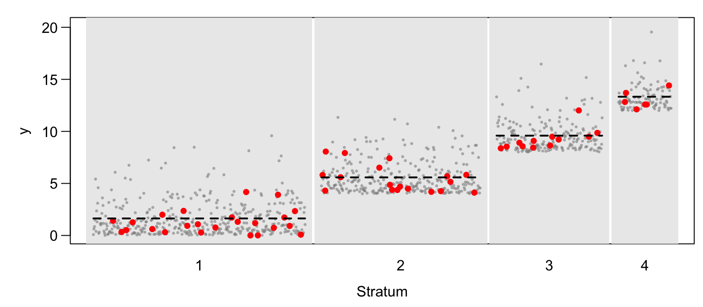
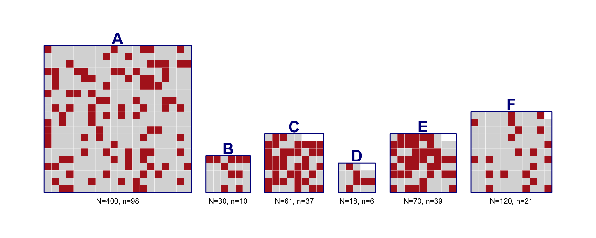
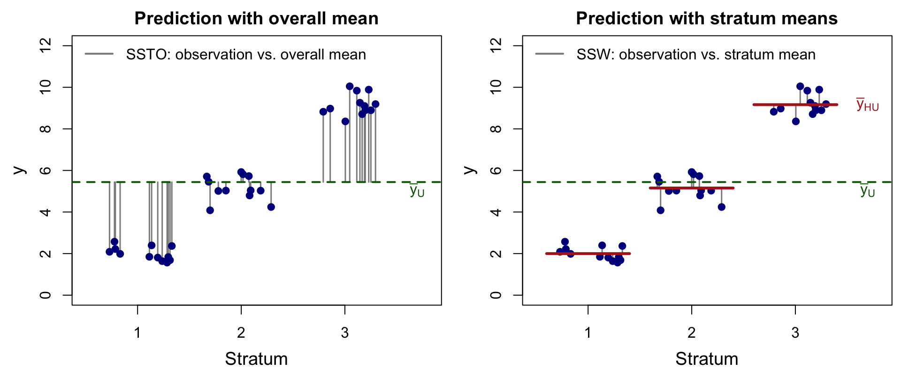
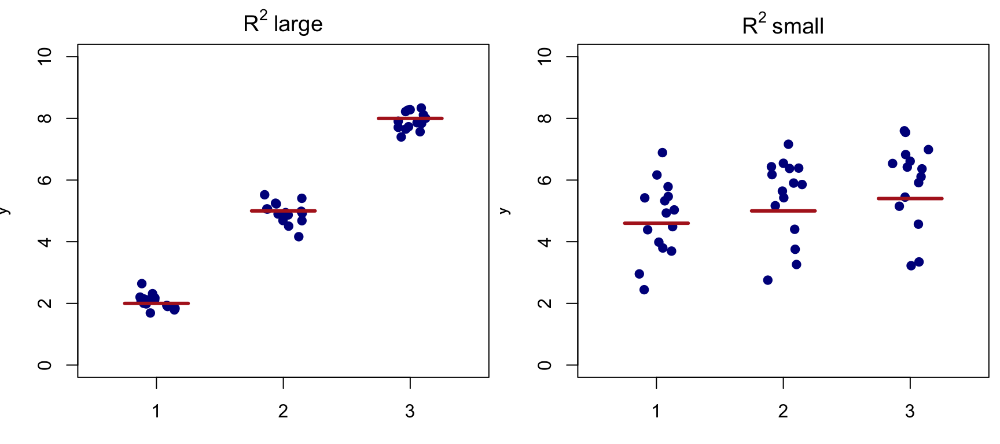
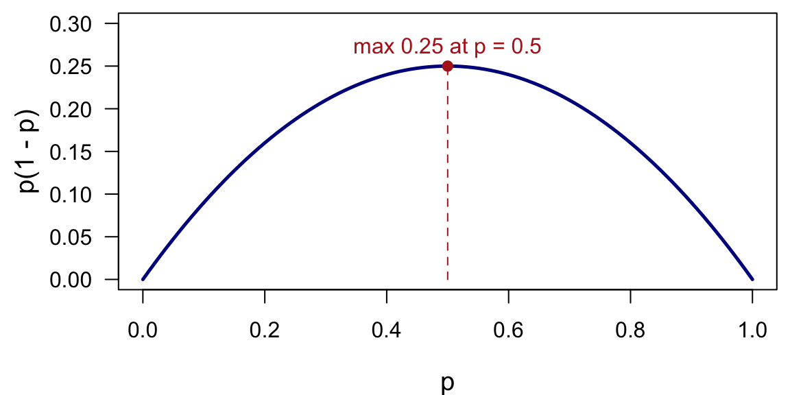
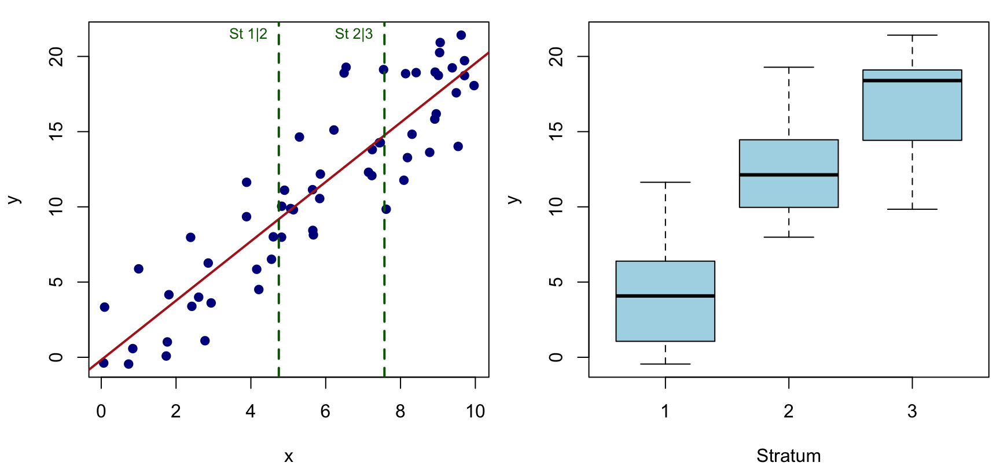
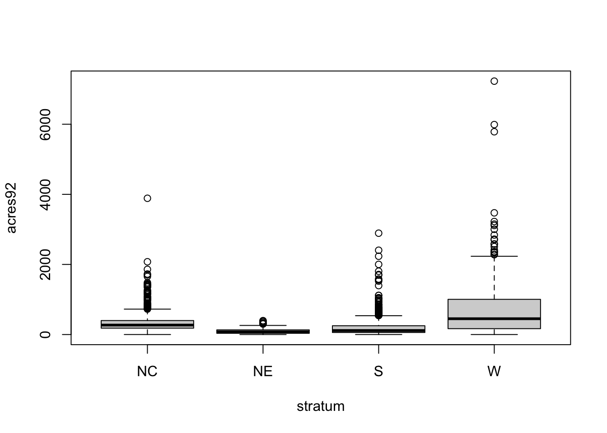
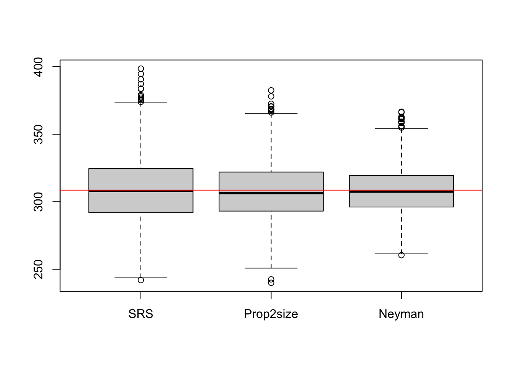
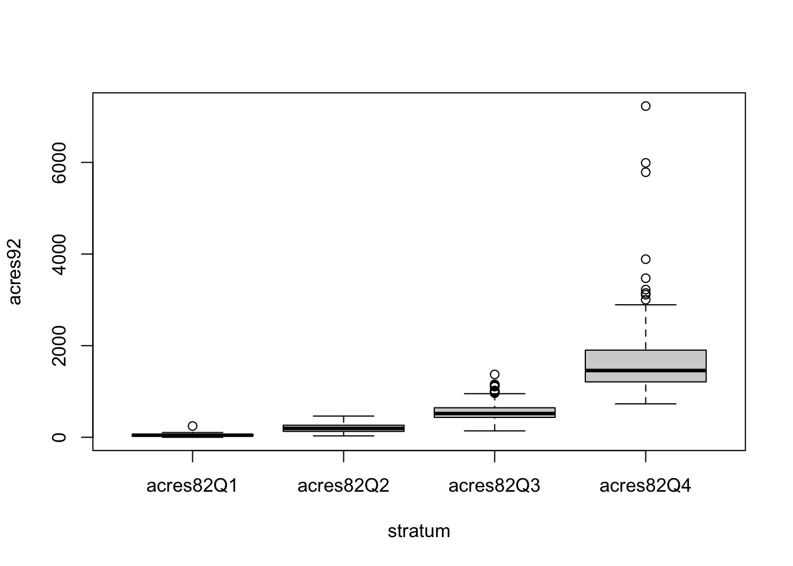
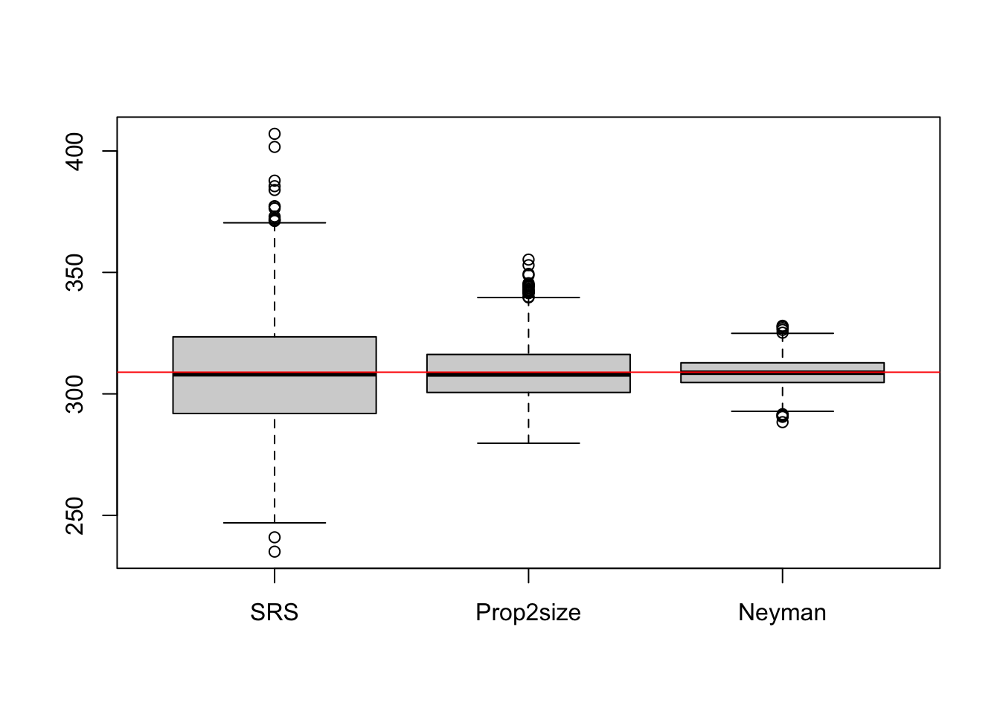

4 Stratified Random Sampling
4.1 What Is Stratified Sampling?
Suppose the variable we are interested in has different means in different subpopulations. Then a stratified random sample can often give more precise estimates of population quantities than a simple random sample of the same size. The word stratify comes from Latin words meaning “to make layers”. We divide the population of \(N\) units into \(H\) subpopulations, called strata. The strata do not overlap and together they make up the whole population, so each sampling unit belongs to exactly one stratum. We then draw an independent probability sample from each stratum and pool the information to estimate population quantities.
Figure 4.1 illustrates the design on a synthetic population of \(N = 1000\) units in \(H = 4\) strata of sizes \(N_h = 400, 300, 200\) and \(100\), sorted by their means. The sample of \(n = 60\) is allocated in proportion to the stratum sizes, \(n_h = 60 N_h/N = 24, 18, 12\) and \(6\), and an SRS of \(n_h\) units is drawn in each stratum, so every stratum is represented in the sample. Because the stratum means are far apart while the spread within each stratum is small, most of the variation in the population lies between the strata, and this part of the variation does not affect the stratified estimator (Section 4.2).
In this chapter the sample within each stratum is a simple random sample (SRS), drawn without replacement. The design is then called stratified random sampling. The material corresponds to Sections 3.1–3.5 of Lohr and Sections 5.1–5.9 of Scheaffer et al.
Example: stratifying U.S. counties by census region. In the SRS chapter we sampled about 10% of the 3078 U.S. counties to estimate the average farm acreage per county. Here we use the four U.S. census regions as strata. To compare stratified sampling directly with SRS, we again sample about 10% of the counties, this time 10% of the counties in each stratum:
| Stratum | Counties in stratum (\(N_h\)) | Counties in sample (\(n_h\)) |
|---|---|---|
| Northeast | 220 | 21 |
| North Central | 1054 | 103 |
| South | 1382 | 135 |
| West | 422 | 41 |
| Total | 3078 | 300 |
We select four separate, independent SRSs, one per stratum. Knowing which counties are in the sample from the Northeast tells us nothing about which counties are in the sample from the South. We analyze these data in Section 4.6.1.
4.2 Estimation with Stratified Samples
4.2.1 Population quantities
Let \(y_{hj}\) be the value of unit \(j\) in stratum \(h\), for \(j = 1, \ldots, N_h\) and \(h = 1, \ldots, H\), so that \(N = \sum_{h=1}^H N_h\). The stratum weight \[ \pi_h = \frac{N_h}{N} \] is the proportion of population units in stratum \(h\), so \(\sum_{h=1}^H \pi_h = 1\). The population quantities of each stratum, and of the whole population, are \[ t_h = \sum_{j=1}^{N_h} y_{hj} \quad(\text{stratum total}), \qquad t = \sum_{h=1}^H t_h \quad(\text{population total}), \] \[ \overline y_{hU} = \frac{t_h}{N_h} \quad(\text{stratum mean}), \qquad \overline y_U = \frac tN = \sum_{h=1}^H \pi_h\, \overline y_{hU} \quad(\text{overall mean}), \] \[ S_h^2 = \frac{1}{N_h-1}\sum_{j=1}^{N_h}(y_{hj}-\overline y_{hU})^2 \quad(\text{stratum variance}). \] The overall mean \(\overline y_U\) is the average of the stratum means, weighted by the stratum weights.
4.2.2 SRS estimators within each stratum
Let \(\mathcal S_h\) be the SRS of \(n_h\) units drawn from stratum \(h\), with total sample size \(n = \sum_{h=1}^H n_h\). Within stratum \(h\) we have an ordinary SRS, so we estimate the stratum quantities with the SRS formulas, applied separately to each stratum: \[ \overline y_h = \frac{1}{n_h}\sum_{j\in\mathcal S_h} y_{hj}, \qquad \hat t_h = \frac{N_h}{n_h}\sum_{j\in\mathcal S_h} y_{hj} = N_h \overline y_h, \qquad s_h^2 = \frac{1}{n_h - 1}\sum_{j\in\mathcal S_h} (y_{hj}-\overline y_h)^2 . \]
4.2.3 Estimators for the population total and mean
Adding up the estimated stratum totals gives the stratified estimator of the population total. Dividing it by \(N\) gives the estimator of the population mean: \[ \boxed{ \hat t_{\text{str}} = \sum_{h=1}^H \hat t_h = \sum_{h=1}^H N_h \overline y_h, \qquad \overline y_{\text{str}} = \frac{\hat t_{\text{str}}}{N} = \sum_{h=1}^H \pi_h\overline y_h .} \] So \(\overline y_{\text{str}}\) is a weighted average of the stratum sample means, with \(\overline y_h\) weighted by \(\pi_h = N_h/N\), the fraction of population units in stratum \(h\). To use stratified sampling, the stratum sizes \(N_h\) must be known.
Unbiasedness. Since an SRS is taken in each stratum, \(E[\overline y_h]=\overline y_{hU}\). Averaging these unbiased stratum estimates with the fixed weights \(N_h/N\) keeps the overall estimate unbiased: \[ E[\overline y_{\text{str}}] = \sum_{h=1}^H \frac{N_h}{N}E[\overline y_h] = \sum_{h=1}^H \frac{N_h}{N}\cdot \frac{1}{N_h}\sum_{j=1}^{N_h} y_{hj} = \frac1N\sum_{h=1}^H \sum_{j=1}^{N_h}y_{hj} = \overline y_U . \] It follows that \(E[\hat t_{\text{str}}] = N\,\overline y_U = t\).
4.2.4 Variances and standard errors
The strata are sampled independently, so the \(\hat t_h\) are independent and their variances add. Each \(\hat t_h\) has the SRS variance \(N_h^2(1-n_h/N_h)S_h^2/n_h\), so \[ V(\hat t_{\text{str}}) = \sum_{h=1}^H V(\hat t_h) = \sum_{h=1}^H \Big(1-\frac{n_h}{N_h}\Big)N_h^2\frac{S_h^2}{n_h}, \qquad V(\overline y_{\text{str}}) = \frac{V(\hat t_{\text{str}})}{N^2} = \sum_{h=1}^H \Big(1-\frac{n_h}{N_h}\Big)\pi_h^2 \frac{S_h^2}{n_h}. \] Only the variability within the strata enters these variances. The differences between the stratum means do not. This is the source of the gain from stratification: if the strata are internally homogeneous, every \(S_h^2\) is small, even when the population as a whole is very variable.
Substituting the sample variances \(s_h^2\) for \(S_h^2\) gives unbiased variance estimators, and their square roots are the standard errors: \[ \boxed{ \hat V(\overline y_{\text{str}}) = \sum_{h=1}^H v_h, \qquad v_h = \Big(1-\frac{n_h}{N_h}\Big)\pi_h^2\frac{s_h^2}{n_h}, \qquad \mathrm{SE}(\overline y_{\text{str}}) = \sqrt{\hat V(\overline y_{\text{str}})} ,} \] \[ \hat V(\hat t_{\text{str}}) = N^2\,\hat V(\overline y_{\text{str}}) = \sum_{h=1}^H \Big(1-\frac{n_h}{N_h}\Big)N_h^2\frac{s_h^2}{n_h}, \qquad \mathrm{SE}(\hat t_{\text{str}}) = N\,\mathrm{SE}(\overline y_{\text{str}}). \] Here \(v_h\) is the contribution of stratum \(h\) to the estimated variance. It appears as the last column of the working tables in this chapter. Each stratum needs at least two sampled units, \(n_h \ge 2\), so that \(s_h^2\) can be computed.
4.2.5 Confidence intervals
Suppose either the sample sizes within the strata are large, or the design has a large number of strata. Then \(\overline y_{\text{str}}\) is approximately normal, and an approximate \(100(1-\alpha)\%\) confidence interval for \(\overline y_U\) is \[ \overline y_{\text{str}} \pm z_{\alpha/2}\,\mathrm{SE}(\overline y_{\text{str}}). \] When \(n\) is not large, it is common to replace the normal quantile by the quantile of a \(t\) distribution with \(n-H\) degrees of freedom, for example \(\hat t_{\text{str}} \pm t_{\alpha/2,\,n-H}\,\mathrm{SE}(\hat t_{\text{str}})\) for the total. The functions used in this book use \(z_{0.025} = 1.96\).
4.3 Example: The Nelchina Caribou Herd
Siniff and Skoog (1964) used stratified random sampling to estimate the size of the Nelchina herd of Alaska caribou in February 1962. Preliminary estimates of caribou density were used to divide the area of interest into six strata. Each stratum was divided into a grid of 4-mi\(^2\) sampling units. Stratum A, for example, contained \(N_1=400\) sampling units, of which \(n_1=98\) were randomly selected for the survey. Figure 4.2 shows the layout.

Spreadsheet calculation. The survey gives the sample mean \(\overline y_h\) and the sample variance \(s_h^2\) of the caribou counts in each stratum. With \(N = 699\), the calculation fits in a spreadsheet. The column \(\pi_h \overline y_h\) holds each stratum’s contribution to \(\overline y_{\text{str}}=\sum_h \pi_h\overline y_h\). The column \(v_h = \big(1-\tfrac{n_h}{N_h}\big)\pi_h^2\tfrac{s_h^2}{n_h}\) holds its contribution to \(\hat V(\overline y_{\text{str}}) = \sum_h v_h\):
| Stratum | \(N_h\) | \(n_h\) | \(\pi_h=N_h/N\) | \(\overline y_h\) | \(s_h^2\) | \(\pi_h\overline y_h\) | \(v_h\) |
|---|---|---|---|---|---|---|---|
| A | 400 | 98 | 0.5722 | 24.1 | 5,575 | 13.7911 | 14.0648 |
| B | 30 | 10 | 0.0429 | 25.6 | 4,064 | 1.0987 | 0.4991 |
| C | 61 | 37 | 0.0873 | 267.6 | 347,556 | 23.3528 | 28.1455 |
| D | 18 | 6 | 0.0258 | 179.0 | 22,798 | 4.6094 | 1.6798 |
| E | 70 | 39 | 0.1001 | 293.7 | 123,578 | 29.4120 | 14.0728 |
| F | 120 | 21 | 0.1717 | 33.2 | 9,795 | 5.6996 | 11.3409 |
| Total | 699 | 211 | 1.0000 | 77.9636 | 69.8029 |
Results. The estimated mean number of caribou per sampling unit, and its standard error, are \[ \overline y_{\text{str}} = 77.96, \qquad \mathrm{SE}(\overline y_{\text{str}}) = \sqrt{69.8029} = 8.35 . \] Multiplying by \(N = 699\) gives the estimated total number of caribou: \[ \hat t_{\text{str}} = 699(77.96) = 54{,}497, \qquad \mathrm{SE}(\hat t_{\text{str}}) = 699(8.35) = 5{,}840, \] and an approximate 95% confidence interval for the size of the herd is \[ 54{,}497 \pm 1.96(5{,}840) = [43{,}051,\ 65{,}943]. \] This interval reflects only sampling error. If the field procedure for counting caribou tends to miss animals, the whole interval will be biased low.
Strata C and E have far fewer units than stratum A, yet they contribute most of the estimate and much of its variance. These are the high-density strata, where the caribou counts are large and highly variable. We return to this point when we discuss optimal allocation in Section 4.8.
The same calculation in R. The function str_est() from the shared file samplingestimate.r (see Section 4.6) takes the stratum summaries \(\overline y_h\), \(s_h\), \(n_h\) and \(N_h\) and produces the same working table:
Code
Nh <- c(A = 400, B = 30, C = 61, D = 18, E = 70, F = 120)
nh <- c(98, 10, 37, 6, 39, 21)
ybarh <- c(24.1, 25.6, 267.6, 179.0, 293.7, 33.2)
s2h <- c(5575, 4064, 347556, 22798, 123578, 9795)
res_caribou <- str_est(ybarh, sqrt(s2h), nh, Nh, estimate = "mean")
res_caribou$table| Stratified Mean Estimation: Working Table | |||||||
| Stratum | \(N_h\) | \(n_h\) | \(\pi_h\)1 | \(\bar y_h\) | \(s_h^2\) | \(\pi_h\bar y_h\) | \(v_h\)2 |
|---|---|---|---|---|---|---|---|
| A | 400 | 98 | 0.57 | 24.10 | 5,575.00 | 13.79 | 14.06 |
| B | 30 | 10 | 0.04 | 25.60 | 4,064.00 | 1.10 | 0.50 |
| C | 61 | 37 | 0.09 | 267.60 | 347,556.00 | 23.35 | 28.15 |
| D | 18 | 6 | 0.03 | 179.00 | 22,798.00 | 4.61 | 1.68 |
| E | 70 | 39 | 0.10 | 293.70 | 123,578.00 | 29.41 | 14.07 |
| F | 120 | 21 | 0.17 | 33.20 | 9,795.00 | 5.70 | 11.34 |
| Total | 699 | 211 | 1.00 | 77.96 | 69.80 | ||
| 1 \(\pi_h = N_h/N\) is the stratum weight. | |||||||
| 2 \(v_h = (1-n_h/N_h)\,\pi_h^2\, s_h^2/n_h\) is stratum \(h\)’s contribution to \(V(\bar y_{str}) = \sum_h v_h\). | |||||||
| \(\bar y_{str} = \sum_h \pi_h\bar y_h = 77.96\) | |||||||
| \(\mathrm{SE}(\bar y_{str}) = \sqrt{\sum_h v_h} = \sqrt{69.80} = 8.35\) | |||||||
Code
str_est(ybarh, sqrt(s2h), nh, Nh, estimate = "total")$estimate |> format_est_gt("total")| \(\hat{t}\) | \(\mathrm{SE}(\hat{t})\) | 95% CI Lower | 95% CI Upper |
|---|---|---|---|
| 54,496.60 | 5,840.01 | 43,050.18 | 65,943.02 |
4.4 Stratified Sampling for Proportions
A proportion is the mean of a 0/1 variable. So we can apply the same formulas with \(\overline y_h = \hat p_h\), the sample proportion in stratum \(h\), and \(s_h^2 = \frac{n_h}{n_h-1}\hat p_h(1-\hat p_h)\): \[ \hat p_{\text{str}} = \sum_{h=1}^H \frac{N_h}{N}\hat p_h, \qquad \hat V(\hat p_{\text{str}}) = \sum_{h=1}^H \Big(1-\frac{n_h}{N_h}\Big)\Big(\frac{N_h}{N}\Big)^2\frac{\hat p_h(1-\hat p_h)}{n_h-1}. \] The total number of units with the attribute is estimated by \(N\hat p_{\text{str}}\), with standard error \(N\,\mathrm{SE}(\hat p_{\text{str}})\).
Example: ACLS survey of scholars. The American Council of Learned Societies (ACLS) used a stratified random sample of the members of seven disciplinary societies. It studied publication patterns and the use of computers and libraries (Morton and Price, 1989). The membership figures \(N_h\), the numbers of valid returns \(n_h\), and the percentage of female respondents were:
| Discipline | Membership (\(N_h\)) | Valid returns (\(n_h\)) | Female members (%) |
|---|---|---|---|
| Literature | 9,100 | 636 | 38 |
| Classics | 1,950 | 451 | 27 |
| Philosophy | 5,500 | 481 | 18 |
| History | 10,850 | 611 | 19 |
| Linguistics | 2,100 | 493 | 36 |
| Political Science | 5,500 | 575 | 13 |
| Sociology | 9,000 | 588 | 26 |
| Totals | 44,000 | 3,835 |
We estimate the proportion of these scholars who are female, ignoring nonresponse for now. With \(N = 44{,}000\), the spreadsheet calculation is:
| Discipline | \(N_h\) | \(n_h\) | \(\pi_h=N_h/N\) | \(\hat p_h\) | \(\pi_h\hat p_h\) | \(v_h\) (\(\times10^{-5}\)) |
|---|---|---|---|---|---|---|
| Literature | 9,100 | 636 | 0.2068 | 0.38 | 0.0786 | 1.476 |
| Classics | 1,950 | 451 | 0.0443 | 0.27 | 0.0120 | 0.066 |
| Philosophy | 5,500 | 481 | 0.1250 | 0.18 | 0.0225 | 0.439 |
| History | 10,850 | 611 | 0.2466 | 0.19 | 0.0469 | 1.448 |
| Linguistics | 2,100 | 493 | 0.0477 | 0.36 | 0.0172 | 0.082 |
| Political Science | 5,500 | 575 | 0.1250 | 0.13 | 0.0163 | 0.276 |
| Sociology | 9,000 | 588 | 0.2045 | 0.26 | 0.0532 | 1.282 |
| Total | 44,000 | 3,835 | 1.0000 | 0.2465 | 5.068 |
Here \(v_h = \big(1-\tfrac{n_h}{N_h}\big)\pi_h^2\tfrac{\hat p_h(1-\hat p_h)}{n_h-1}\). Summing the columns gives \[ \hat p_{\text{str}} = \frac{9100}{44{,}000}(0.38) + \cdots + \frac{9000}{44{,}000}(0.26) = 0.2465, \qquad \mathrm{SE}(\hat p_{\text{str}}) = \sqrt{5.068\times10^{-5}} = 0.0071 . \] About 24.7% of the members are estimated to be female. To estimate the total number of female scholars, multiply both numbers by \(N = 44{,}000\). This gives about 10,846 women, with a standard error of about 313.
In R, we pass \(s_h = \sqrt{n_h\hat p_h(1-\hat p_h)/(n_h-1)}\) to str_est():
Code
Nh <- c(Literature = 9100, Classics = 1950, Philosophy = 5500, History = 10850,
Linguistics = 2100, PoliSci = 5500, Sociology = 9000)
nh <- c(636, 451, 481, 611, 493, 575, 588)
ph <- c(0.38, 0.27, 0.18, 0.19, 0.36, 0.13, 0.26)
sh <- sqrt(nh / (nh - 1) * ph * (1 - ph))
round(str_est(ph, sh, nh, Nh, estimate = "mean", show.details = FALSE)$estimate, 4) Est. S.E. ci.low ci.upp
0.2465 0.0071 0.2326 0.2605 4.5 Alternative Formulas for \(\overline y_{\text{str}}\)
The estimator \(\overline y_{\text{str}} = \sum_h \pi_h \overline y_h\) can be written in two other ways. Each one shows something about the design. The first compares it with the sample mean of an SRS and shows why the weights must be \(N_h/N\). The second writes it as a weighted average over individual units, with each unit weighted by its sampling weight. This is the form used for survey data files.
4.5.1 Weighting by population fractions instead of sample fractions
Suppose instead that we had taken an SRS of size \(n=n_1+\cdots+n_H\) from the whole population. Grouping the sampled units by stratum, the sample mean is \[ \overline y_{\text{SRS}} = \frac{1}{n}\sum_{(h,j)\in\mathcal S} y_{hj} = \frac{n_1\overline y_1 + \cdots + n_H\overline y_H}{n} = \overline y_1\frac{n_1}{n} + \cdots + \overline y_H\frac{n_H}{n}, \] which we compare with the stratified estimator \[ \overline y_{\text{str}} = \overline y_1\frac{N_1}{N} + \cdots + \overline y_H\frac{N_H}{N}. \] For proportions, similarly, \(\hat p_{\text{SRS}} = \sum_{h} \frac{n_h}{n}\hat p_h\) while \(\hat p_{\text{str}} = \sum_{h} \frac{N_h}{N}\hat p_h\).
Both estimators average the stratum sample means. The difference is in the weights. In an SRS, the stratum sizes in the sample \(n_h\) are random, so \(\overline y_{\text{SRS}}\) weights each stratum by its realized sample fraction \(n_h/n\). That fraction varies from sample to sample and can be distorted by nonresponse rates that differ between strata. In contrast, \(\overline y_{\text{str}}\) uses the known, fixed population fraction \(N_h/N\). These fixed weights make it unbiased for \(\overline y_U\) whatever the \(n_h\) are. When \(n_h/n = N_h/N\) for every \(h\) (proportional allocation, Section 4.7), the two estimators coincide.
4.5.2 Weighting each unit by its sampling weight
Write the stratified sample as \(\mathcal S = (\mathcal S_1,\ldots,\mathcal S_H)\), where \(\mathcal S_h\) is the SRS drawn from stratum \(h\). The strata are sampled independently, so the probability of selecting a particular sample is the product of the probabilities of its stratum samples: \[ P(\mathcal S) = P(\mathcal S_1)\times P(\mathcal S_2)\times\cdots\times P(\mathcal S_H) = \frac{1}{\binom{N_1}{n_1}}\cdot\frac{1}{\binom{N_2}{n_2}}\cdots\frac{1}{\binom{N_H}{n_H}}. \]
For SRS we defined the sampling weight of a unit as the reciprocal of its inclusion probability. A unit \(j\) in stratum \(h\) is included with probability \(n_h/N_h\), the sampling fraction in stratum \(h\). (Do not confuse this with the stratum weight \(\pi_h = N_h/N\).) So its sampling weight is \[ w_{hj} = \frac{N_h}{n_h}. \] Unless every stratum has the same sampling fraction, units in different strata have different inclusion probabilities. Stratified sampling is therefore an example of unequal-probability sampling.
The sampling weight can be thought of as the number of population units that a sampled unit represents. Within stratum \(h\) all \(n_h\) sampled units have the same weight \(N_h/n_h\), so the weights add up to the stratum sizes and to the population size: \[ \sum_{j\in\mathcal S_h} w_{hj} = n_h\cdot\frac{N_h}{n_h} = N_h, \qquad \sum_{h=1}^H\sum_{j\in\mathcal S_h} w_{hj} = \sum_{h=1}^H N_h = N. \]
Estimators in terms of the weights. Since \(N_h\overline y_h = \frac{N_h}{n_h}\sum_{j\in\mathcal S_h} y_{hj} = \sum_{j\in\mathcal S_h} w_{hj}\,y_{hj}\), the estimated total is a weighted sum over all sampled units, regardless of stratum. Since the weights sum to \(N\), the estimated mean is a weighted average: \[
\hat t_{\text{str}} = \sum_{h=1}^H \sum_{j\in\mathcal S_h} w_{hj}\, y_{hj},
\qquad
\overline y_{\text{str}} = \frac{\sum_{h=1}^H\sum_{j\in\mathcal S_h} w_{hj}y_{hj}}{\sum_{h=1}^H\sum_{j\in\mathcal S_h} w_{hj}}.
\] This is how survey data files are usually distributed: one row per sampled unit, with a column of sampling weights. The weight column of agstrat.csv in Section 4.6.1 is an example.
For the caribou survey the weights are:
| Stratum | \(N_h\) | \(n_h\) | \(w_{hj} = N_h/n_h\) |
|---|---|---|---|
| A | 400 | 98 | 4.08 |
| B | 30 | 10 | 3.00 |
| C | 61 | 37 | 1.65 |
| D | 18 | 6 | 3.00 |
| E | 70 | 39 | 1.79 |
| F | 120 | 21 | 5.71 |
The weights alone are enough for the point estimates, but not for the variances. Strata B and D have the same weight, so the weights do not identify which stratum a unit belongs to. The variance estimator needs \(s_h^2\) computed separately within each stratum, so the data file must also record each unit’s stratum.
4.6 Analyzing Stratified Data in R
The estimating functions used throughout this book live in a single shared file, samplingestimate.r, sourced at the start of this chapter. They include str_est, str_est_data and srs_est, which compute the stratified mean, its standard error and confidence intervals. str_est works from the stratum summaries (\(\overline y_h\), \(s_h\), \(n_h\), \(N_h\)), as in the caribou example. str_est_data computes everything directly from a data set with stratum and weight columns.
Show the shared estimating functions (samplingestimate.r)
# =============================================================
# Shared estimation functions for the Elements of Sampling Survey
# book. Source this file from any chapter that needs point/SE/CI
# estimators or their gt-table formatting helpers, e.g.:
#
# source("samplingestimate.r")
#
# =============================================================
suppressPackageStartupMessages({
library(gt)
})
# ---------------------------------------------------------
# Shared gt-table helpers
# ---------------------------------------------------------
## Formats a gt table column as ordinary fixed-point, UNLESS its values are
## too small (< `small` in absolute value) or too large (>= `large`), in
## which case it switches that column to scientific notation (rendered as
## "m x 10^n" via gt's exp_style = "x10n") instead.
fmt_auto <- function (gt_tbl, data, columns, decimals = 2, small = 1e-3, large = 1e5)
{
for (col in columns)
{
x <- data[[col]]
x <- x[is.finite (x) & x != 0]
if (length (x) == 0) next
## judge by the column's TYPICAL magnitude, not by its extremes: the
## Sum row is n times the size of a data row, and one residual that
## lands near zero should not push a whole column into scientific
typical <- stats::median (abs (x))
if (typical < small || typical >= large)
gt_tbl <- fmt_scientific (gt_tbl, columns = tidyselect::all_of (col), decimals = decimals, exp_style = "x10n")
else
gt_tbl <- fmt_number (gt_tbl, columns = tidyselect::all_of (col), decimals = decimals)
}
gt_tbl
}
## Formats a single scalar for inline formula display (fixed-point with
## thousands separators, switching to "m \times 10^{n}" LaTeX scientific
## notation for very small or very large magnitudes, mirroring fmt_auto()'s
## use of exp_style = "x10n") --- used to show worked-example steps such as
## \bar y = sum/n with the actual numbers plugged in.
fmt_num <- function (x, decimals = 2, small = 1e-3, large = 1e5)
{
use_sci <- is.finite (x) & x != 0 & (abs (x) < small | abs (x) >= large)
exps <- ifelse (x == 0, 0, floor (log10 (abs (x))))
mant <- ifelse (x == 0, 0, x / 10^exps)
ifelse (use_sci,
sprintf ("%s \\times 10^{%d}", formatC (mant, format = "f", digits = decimals), exps),
formatC (x, format = "f", digits = decimals, big.mark = ","))
}
## The agriculture files (agpop.csv and the samples drawn from it: agsrs.csv,
## agstrat.csv, ...) record county acreages in acres, which run into the
## millions and make every working table below hard to read. This converts the
## acreage columns to THOUSANDS of acres, so a mean reads as 297.9 rather than
## 297,897, and a variance as 2.0e5 rather than 2.0e11. The file's missing-value
## code, -99, becomes NA first, so it cannot be silently rescaled to -0.099.
## d --- data frame just read from one of those files
## cols --- acreage columns to convert (those absent from d are ignored)
acres_in_thousands <- function (d, cols = c ("acres92", "acres87", "acres82"))
{
cols <- intersect (cols, names (d))
d[cols] <- lapply (d[cols], function (x) { x[x == -99] <- NA; x / 1000 })
d
}
## Truncates a row-level working data.frame whose LAST row is a summary row
## (e.g. "Sum"/"Total"): if there are more than head_n data rows (excluding
## that summary row), keeps only the first head_n data rows, inserts one
## "..." placeholder row, then the summary row --- so long working tables
## stay readable. id_col --- name of the row-label column.
truncate_working <- function (working, id_col, head_n = 6)
{
n <- nrow (working) - 1
if (n <= head_n + 1) return (working)
dots <- working[1, ]
dots[1, ] <- NA
dots[1, id_col] <- "..."
rbind (working[seq_len (head_n), ], dots, working[nrow (working), ])
}
# Helper function to format estimation outputs with appropriate mathematical headers
format_est_gt <- function(est_data, est_type = c("mean", "total", "ratio", "reg_mean", "reg_total", "ratio_mean", "domain_mean",
"hh_total", "hh_mean", "hh_ratio_mean", "hh_B", "hh_ybar")) {
est_type <- match.arg(est_type)
sym_map <- list(
"mean" = c(est = "$\\bar{y}$", se = "$\\mathrm{SE}(\\bar{y})$"),
"total" = c(est = "$\\hat{t}$", se = "$\\mathrm{SE}(\\hat{t})$"),
"ratio" = c(est = "$\\hat{B}$", se = "$\\mathrm{SE}(\\hat{B})$"),
"reg_mean" = c(est = "$\\bar{y}_{reg}$", se = "$\\mathrm{SE}(\\bar{y}_{reg})$"),
"reg_total" = c(est = "$\\hat{t}_{reg}$", se = "$\\mathrm{SE}(\\hat{t}_{reg})$"),
"ratio_mean" = c(est = "$\\bar{y}_{r}$", se = "$\\mathrm{SE}(\\bar{y}_{r})$"),
"domain_mean" = c(est = "$\\bar{y}_{d}$", se = "$\\mathrm{SE}(\\bar{y}_{d})$"),
## UPSWR (Hansen-Hurwitz): total, mean per unit, and ratio (mean per element)
"hh_total" = c(est = "$\\hat{t}_{\\mathrm{HH}}$",
se = "$\\mathrm{SE}(\\hat{t}_{\\mathrm{HH}})$"),
"hh_mean" = c(est = "$\\hat{\\bar{t}}_{\\mathrm{HH}}$",
se = "$\\mathrm{SE}(\\hat{\\bar{t}}_{\\mathrm{HH}})$"),
"hh_ratio_mean" = c(est = "$\\hat{\\bar{y}}_{\\mathrm{HH},r}$",
se = "$\\mathrm{SE}(\\hat{\\bar{y}}_{\\mathrm{HH},r})$"),
## UPSWR with psi_i = x_i / t_x (upswr_est): ratio B, mean of y per unit
"hh_B" = c(est = "$\\hat{B}_{\\mathrm{HH}}$",
se = "$\\mathrm{SE}(\\hat{B}_{\\mathrm{HH}})$"),
"hh_ybar" = c(est = "$\\hat{\\bar{y}}_{\\mathrm{HH}}$",
se = "$\\mathrm{SE}(\\hat{\\bar{y}}_{\\mathrm{HH}})$")
)
est_sym <- sym_map[[est_type]]["est"]
se_sym <- sym_map[[est_type]]["se"]
# Convert to data frame. Use unname() to strip hidden lm() coefficient names
if (is.vector(est_data) && !is.list(est_data)) {
df <- as.data.frame(t(unname(est_data)))
} else {
df <- as.data.frame(est_data)
}
# Force standard column names so gt() never gets confused
colnames(df) <- c("Est.", "S.E.", "ci.low", "ci.upp")
# Check if we should use rownames as a stub
use_stub <- !is.null(rownames(df)) && !all(rownames(df) == as.character(1:nrow(df)))
df |>
gt(rownames_to_stub = use_stub) |>
cols_label(
Est. = md(est_sym),
S.E. = md(se_sym),
ci.low = md("95% CI Lower"),
ci.upp = md("95% CI Upper")
) |>
fmt_number(
columns = everything(),
decimals = 2
) |>
tab_options(table.width = pct(70))
}
## Formats an lm object as two gt tables, replacing the plain-text
## summary(lmfit) output:
## $coef --- coefficient table (Estimate, S.E., t value, p value)
## $fit --- one-row table of model fit statistics, including R^2
## returns list($coef, $fit)
format_lm_gt <- function (lmfit)
{
s <- summary (lmfit)
coef_df <- as.data.frame (s$coefficients)
colnames (coef_df) <- c ("Estimate", "S.E.", "t value", "p value")
coef_gt <- coef_df |>
gt (rownames_to_stub = TRUE) |>
fmt_number (columns = c ("Estimate", "S.E.", "t value"), decimals = 4) |>
fmt_number (columns = "p value", decimals = 4) |>
tab_header (title = "Coefficient Estimates") |>
tab_options (table.width = pct(70))
fstat <- s$fstatistic
fit_df <- data.frame (
R.squared = s$r.squared,
Adj.R.squared = s$adj.r.squared,
Sigma = s$sigma,
F.statistic = unname (fstat["value"]),
p.value = unname (pf (fstat["value"], fstat["numdf"], fstat["dendf"], lower.tail = FALSE))
)
fit_gt <- fit_df |>
gt () |>
cols_label (
R.squared = md ("$R^2$"),
Adj.R.squared = md ("Adj. $R^2$"),
Sigma = md ("$\\hat\\sigma$"),
F.statistic = "F-statistic",
p.value = "p-value"
) |>
fmt_number (columns = everything (), decimals = 4) |>
tab_header (title = "Model Fit Summary") |>
tab_options (table.width = pct(70))
list (coef = coef_gt, fit = fit_gt)
}
# ---------------------------------------------------------
# Base Estimators
# ---------------------------------------------------------
## sdata --- a vector of original survey data
## N --- population size
## estimate --- "mean" (default) returns the population MEAN estimate;
## "total" returns the population TOTAL estimate (N * mean,
## with SE/CI scaled accordingly); requires finite N
## show.details --- if TRUE (default), also return a gt table of the
## row-level working values y_i, the fitted value \hat y_i
## (constant, and equal to \bar y under the SRS model),
## e_i = y_i-\hat y_i, and e_i^2, with a Sum row and a
## footnote showing s_y^2; NULL otherwise
## col_labels --- named list (y, yhat, dev, ybar, s) of RAW latex: the
## data, fitted and deviation columns, the symbol for the
## sample mean, and for the sample SD; a partial list fills in
## the remaining defaults, so callers can override just one label
## title --- the working table's title
## returns list ($estimate = c(Est., S.E., ci.low, ci.upp), $table)
srs_est <- function (sdata, N = Inf, estimate = c ("mean", "total"),
show.details = TRUE, col_labels = list (),
title = "SRS Mean Estimation: Working Table", decimals = 2)
{
estimate <- match.arg (estimate)
## show `decimals` decimals in the working table and its notes
fmt_num_default <- fmt_num
fmt_num <- function (x, d = decimals) fmt_num_default (x, decimals = if (d == 2) decimals else d)
col_labels <- modifyList (list (y = "y_i", yhat = "\\hat y_i", dev = "e_i",
ybar = "\\bar y", s = "s_y"), col_labels)
ybar_lab <- col_labels$ybar
s_lab <- col_labels$s
n <- length (sdata)
ybar <- mean (sdata)
dev <- sdata - ybar
s2y <- sum (dev^2) / (n - 1)
se.ybar <- sqrt((1 - n / N)) * sd (sdata) / sqrt(n)
if (estimate == "total")
{
if (!is.finite (N))
stop ("N must be finite to compute estimate = \"total\"")
est <- N * ybar
se.est <- N * se.ybar
}
else
{
est <- ybar
se.est <- se.ybar
}
mem <- qt (0.975, df = n - 1) * se.est
estimate_vec <- c (Est. = est, S.E. = se.est, ci.low = est - mem, ci.upp = est + mem)
if (!show.details)
return (list (estimate = estimate_vec, table = NULL))
working <- data.frame (
i = c (seq_len (n), "Sum"),
y = c (sdata, sum (sdata)),
yhat = rep (ybar, n + 1),
dev = c (dev, sum (dev)),
dev2 = c (dev^2, sum (dev^2))
)
working <- truncate_working (working, id_col = "i")
table <- gt (working) |>
tab_header (title = title, subtitle = md (sprintf ("$n = %d$", n))) |>
cols_label (
i = md ("$i$"),
y = md (sprintf ("$%s$", col_labels$y)),
yhat = md (sprintf ("$%s$", col_labels$yhat)),
dev = md (sprintf ("$%s$", col_labels$dev)),
dev2 = md (sprintf ("$(%s-%s)^2$", col_labels$y, col_labels$yhat))
) |>
cols_width (i ~ px (40), everything () ~ px (110)) |>
fmt_auto (data = working, columns = c ("y", "yhat", "dev", "dev2"), decimals = decimals) |>
sub_missing (missing_text = "...") |>
tab_style (
style = cell_text (weight = "bold"),
locations = cells_body (rows = i == "Sum")
) |>
tab_footnote (
footnote = md (paste0 (
if (col_labels$yhat != ybar_lab)
sprintf ("$%s = %s$ for every unit under the SRS model; ", col_labels$yhat, ybar_lab),
sprintf ("$%s^2 = \\sum_i (%s-%s)^2/(n-1) = %s$.",
s_lab, col_labels$y, col_labels$yhat, fmt_num (s2y)))),
locations = cells_column_labels (columns = dev2)
) |>
tab_source_note (
source_note = md (if (estimate == "total")
sprintf ("$\\hat t = N%s = %s \\times %s = %s$",
ybar_lab, fmt_num (N, 0), fmt_num (ybar), fmt_num (est))
else
sprintf ("$%s = \\dfrac{\\sum_i %s}{n} = \\dfrac{%s}{%d} = %s$",
ybar_lab, col_labels$y, fmt_num (sum (sdata)), n, fmt_num (ybar)))
) |>
tab_source_note (
source_note = md (if (estimate == "total")
sprintf ("$\\mathrm{SE}(\\hat t) = N \\times \\mathrm{SE}(%s) = %s \\times %s = %s$",
ybar_lab, fmt_num (N, 0), fmt_num (se.ybar), fmt_num (se.est))
else if (is.finite (N))
sprintf ("$\\mathrm{SE}(%s) = \\sqrt{1-\\dfrac{n}{N}}\\,\\dfrac{%s}{\\sqrt n} = \\sqrt{1-\\dfrac{%d}{%d}}\\,\\dfrac{%s}{\\sqrt{%d}} = %s$",
ybar_lab, s_lab, n, N, fmt_num (sqrt (s2y)), n, fmt_num (se.ybar))
else
sprintf ("$\\mathrm{SE}(%s) = \\dfrac{%s}{\\sqrt n} = \\dfrac{%s}{\\sqrt{%d}} = %s$",
ybar_lab, s_lab, fmt_num (sqrt (s2y)), n, fmt_num (se.ybar)))
)
list (estimate = estimate_vec, table = table)
}
## ydata --- observations of the variable of interest
## xdata --- observations of the auxiliary variable
## xbarU --- population mean of the auxiliary variable; required when
## estimate is "mean" or "total"; ignored when estimate = "model"
## N --- population size
## estimate --- "mean" (default) returns the ratio estimate of the
## population MEAN of y, Bhat*xbarU; "total" returns the ratio
## estimate of the population TOTAL of y (requires finite N);
## "model" returns the raw ratio coefficient Bhat = ybar/xbar
## itself (with its own SE)
## show.details --- if TRUE (default), also return a gt table of the
## row-level working values y_i, x_i, fitted yhat_i =
## Bhat*x_i, residual e_i, and e_i^2, with a Sum row and a
## footnote showing Bhat and s_e^2; NULL otherwise
## col_labels --- named list (y, x, yhat) of RAW latex for those
## working-table columns, so this function can be reused
## (e.g. by cluster_ratio(), upswr_ratio()) with
## context-appropriate labels
## extra_col --- optional column spec, or list of column specs, adding
## RAW-latex-labelled columns of per-unit `values` right before
## the y column of the working table (e.g. the within-cluster
## means $\bar y_i$ used by cluster_ratio() to build $\hat
## t_i = \bar y_i M_i$); a spec is a list (label, values,
## formula, total): `formula` (optional) is shown as a footnote
## on the y column documenting that relationship, and
## `total = TRUE` puts the column's sum in the Sum row
## tail_col --- optional column spec, or list of specs, in the same format,
## appended AFTER the $e_i^2$ column (e.g. the per-cluster
## second-stage variance contributions $\hat v_i$); each spec's
## `formula` is footnoted on its own column
## var2 --- extra variance component to add to $\hat V(\hat B)\,\bar x^2$,
## i.e. $\hat V(\hat B) = [(1-n/N) s_e^2/n + \mathrm{var2}]/\bar x^2$;
## 0 (default) gives the usual one-stage ratio variance. Used by
## cluster_ratio() to add the within-cluster (second-stage) term
## var2_label --- RAW latex for that extra term, shown symbolically in the
## standard-error source note when var2 > 0
## xbar_label --- RAW latex naming $\bar x$ in the standard-error note
## (cluster_ratio() passes "\\bar M", the mean cluster size)
## returns list ($estimate = c(Est., S.E., ci.low, ci.upp), $table)
ratio_est <- function (ydata, xdata, xbarU = NULL, N = Inf,
estimate = c ("mean", "total", "model"), show.details = TRUE,
col_labels = list (y = "y_i", x = "x_i", yhat = "\\hat y_i"),
extra_col = NULL, B_label = "\\hat B",
tail_col = NULL, var2 = 0, var2_label = NULL,
xbar_label = "\\bar x")
{
estimate <- match.arg (estimate)
n <- length (xdata)
xbar <- mean (xdata)
ybar <- mean (ydata)
B_hat <- ybar / xbar
yhat <- B_hat * xdata
e <- ydata - yhat
var_e <- sum (e^2) / (n - 1)
sd_B_hat <- sqrt ((1 - n/N) * var_e / n + var2) / xbar
if (estimate == "model")
{
est <- B_hat
sd_est <- sd_B_hat
}
else
{
if (is.null (xbarU))
stop ("xbarU (population mean of x) is required when estimate is \"mean\" or \"total\"")
if (estimate == "total")
{
if (!is.finite (N))
stop ("N must be finite to compute estimate = \"total\"")
est <- B_hat * xbarU * N
sd_est <- sd_B_hat * xbarU * N
}
else
{
est <- B_hat * xbarU
sd_est <- sd_B_hat * xbarU
}
}
mem <- qt (0.975, df = n - 1) * sd_est
estimate_vec <- c (Est. = est, S.E. = sd_est, ci.low = est - mem, ci.upp = est + mem)
if (!show.details)
return (list (estimate = estimate_vec, table = NULL))
## a column spec is list (label, values, formula, total); accept either one
## spec or a list of them, so callers can add several columns at once
norm_specs <- function (x)
if (is.null (x)) list () else if (!is.null (x$label)) list (x) else x
extras <- norm_specs (extra_col)
tails <- norm_specs (tail_col)
nm <- function (specs, prefix) if (length (specs)) paste0 (prefix, seq_along (specs)) else character (0)
e_nms <- nm (extras, "extra")
t_nms <- nm (tails, "tail")
add_specs <- function (cols, specs, nms)
{
for (k in seq_along (specs))
cols[[nms[k]]] <- c (specs[[k]]$values,
if (isTRUE (specs[[k]]$total)) sum (specs[[k]]$values) else NA)
cols
}
working_cols <- add_specs (list (i = c (seq_len (n), "Sum")), extras, e_nms)
working_cols$y <- c (ydata, sum (ydata))
working_cols$x <- c (xdata, sum (xdata))
working_cols$yhat <- c (yhat, sum (yhat))
working_cols$e <- c (e, sum (e))
working_cols$e2 <- c (e^2, sum (e^2))
working_cols <- add_specs (working_cols, tails, t_nms)
working <- as.data.frame (working_cols, check.names = FALSE)
working <- truncate_working (working, id_col = "i")
fmt_cols <- c (e_nms, "y", "x", "yhat", "e", "e2", t_nms)
label_args <- list (i = md ("$i$"))
for (k in seq_along (extras))
label_args[[e_nms[k]]] <- md (sprintf ("$%s$", extras[[k]]$label))
label_args$y <- md (sprintf ("$%s$", col_labels$y))
label_args$x <- md (sprintf ("$%s$", col_labels$x))
label_args$yhat <- md (sprintf ("$%s$", col_labels$yhat))
label_args$e <- md ("$e_i$")
label_args$e2 <- md ("$e_i^2$")
for (k in seq_along (tails))
label_args[[t_nms[k]]] <- md (sprintf ("$%s$", tails[[k]]$label))
table <- gt (working) |>
tab_header (title = "Ratio Estimation: Working Table", subtitle = md (sprintf ("$n = %d$", n)))
table <- do.call (cols_label, c (list (table), label_args))
table <- table |>
cols_width (i ~ px (40), everything () ~ px (100)) |>
fmt_auto (data = working, columns = fmt_cols, decimals = 2) |>
sub_missing (missing_text = "...") |>
tab_style (
style = cell_text (weight = "bold"),
locations = cells_body (rows = i == "Sum")
) |>
tab_footnote (
footnote = md (sprintf ("$\\hat B = \\sum_i %s / \\sum_i %s = %s$, $%s = \\hat B\\, %s$, $s_e^2 = %s$.",
col_labels$y, col_labels$x, fmt_num (B_hat), col_labels$yhat, col_labels$x, fmt_num (var_e))),
locations = cells_column_labels (columns = yhat)
)
## an extra column's formula documents how it feeds the y column; a tail
## column's formula belongs on the tail column itself
for (k in seq_along (extras))
if (!is.null (extras[[k]]$formula))
table <- table |>
tab_footnote (
footnote = md (sprintf ("$%s$.", extras[[k]]$formula)),
locations = cells_column_labels (columns = y)
)
for (k in seq_along (tails))
if (!is.null (tails[[k]]$formula))
table <- table |>
tab_footnote (
footnote = md (sprintf ("$%s$.", tails[[k]]$formula)),
locations = cells_column_labels (columns = tidyselect::all_of (t_nms[k]))
)
table <- table |>
tab_source_note (
source_note = md (if (estimate == "model")
sprintf ("$%s = \\dfrac{\\sum_i %s}{\\sum_i %s} = \\dfrac{%s}{%s} = %s$",
B_label, col_labels$y, col_labels$x, fmt_num (sum (ydata)), fmt_num (sum (xdata)), fmt_num (B_hat))
else if (estimate == "total")
sprintf ("$\\hat t = \\hat B\\,\\bar x_U\\,N = %s \\times %s \\times %s = %s$",
fmt_num (B_hat), fmt_num (xbarU), fmt_num (N, 0), fmt_num (est))
else
sprintf ("$\\bar y_r = \\hat B\\,\\bar x_U = %s \\times %s = %s$",
fmt_num (B_hat), fmt_num (xbarU), fmt_num (est)))
) |>
tab_source_note (
source_note = md (if (estimate == "model")
(if (var2 > 0)
## two parts: the ratio variance over the sampled units, plus
## whatever second-stage variance the caller supplied
sprintf ("$\\mathrm{SE}(%s) = \\sqrt{\\left(1-\\dfrac{n}{N}\\right)\\dfrac{s_e^2}{n\\,%s^2} + %s} = \\sqrt{\\left(1-\\dfrac{%d}{%d}\\right)\\dfrac{%s}{%d \\times %s^2} + %s} = %s$",
B_label, xbar_label,
if (is.null (var2_label)) "\\mathrm{var}_2" else var2_label,
n, N, fmt_num (var_e), n, fmt_num (xbar),
fmt_num (var2 / xbar^2), fmt_num (sd_B_hat))
else if (is.finite (N))
sprintf ("$\\mathrm{SE}(%s) = \\dfrac{1}{\\bar x}\\sqrt{\\left(1-\\dfrac{n}{N}\\right)\\dfrac{s_e^2}{n}} = \\dfrac{1}{%s}\\sqrt{\\left(1-\\dfrac{%d}{%d}\\right)\\dfrac{%s}{%d}} = %s$",
B_label, fmt_num (xbar), n, N, fmt_num (var_e), n, fmt_num (sd_B_hat))
else
sprintf ("$\\mathrm{SE}(%s) = \\dfrac{1}{\\bar x}\\sqrt{\\dfrac{s_e^2}{n}} = \\dfrac{1}{%s}\\sqrt{\\dfrac{%s}{%d}} = %s$",
B_label, fmt_num (xbar), fmt_num (var_e), n, fmt_num (sd_B_hat)))
else if (estimate == "total")
sprintf ("$\\mathrm{SE}(\\hat t) = \\mathrm{SE}(\\hat B)\\,\\bar x_U\\,N = %s \\times %s \\times %s = %s$",
fmt_num (sd_B_hat), fmt_num (xbarU), fmt_num (N, 0), fmt_num (sd_est))
else
sprintf ("$\\mathrm{SE}(\\bar y_r) = \\mathrm{SE}(\\hat B)\\,\\bar x_U = %s \\times %s = %s$",
fmt_num (sd_B_hat), fmt_num (xbarU), fmt_num (sd_est)))
)
list (estimate = estimate_vec, table = table)
}
## ydata --- observations of the variable of interest
## xdata --- observations of the auxiliary variable
## xbarU --- population mean of the auxiliary variable; required when
## estimate is "mean" or "total"; ignored when estimate = "model"
## N --- population size
## estimate --- "mean" (default) returns the regression estimate of the
## population MEAN of y, Bhat0 + Bhat1*xbarU; "total" returns
## the regression estimate of the population TOTAL of y
## (requires finite N); "model" returns the raw fitted slope
## Bhat1 itself (with its own SE from the lm fit)
## show.details --- if TRUE (default), also return a gt table of the
## row-level working values y_i, x_i, fitted yhat_i, e_i,
## e_i^2, with a Sum row and a footnote showing Bhat0,
## Bhat1, and s_e^2; NULL otherwise
## returns list ($estimate = c(Est., S.E., ci.low, ci.upp), $table)
reg_est <- function (ydata, xdata, xbarU = NULL, N = Inf,
estimate = c ("mean", "total", "model"), show.details = TRUE)
{
estimate <- match.arg (estimate)
n <- length (ydata)
lmfit <- lm (ydata ~ xdata)
Bhat <- lmfit$coefficients
yhat <- lmfit$fitted.values
e <- lmfit$residuals
SSe <- sum (e^2) / (n - 2)
if (estimate == "model")
{
est <- unname (Bhat[2])
sd_est <- summary (lmfit)$coefficients[2, "Std. Error"]
}
else
{
if (is.null (xbarU))
stop ("xbarU (population mean of x) is required when estimate is \"mean\" or \"total\"")
yhat_reg <- unname (Bhat[1] + Bhat[2] * xbarU)
se_yhat_reg <- sqrt ((1-n/N) * SSe / n)
if (estimate == "total")
{
if (!is.finite (N))
stop ("N must be finite to compute estimate = \"total\"")
est <- yhat_reg * N
sd_est <- se_yhat_reg * N
}
else
{
est <- yhat_reg
sd_est <- se_yhat_reg
}
}
mem <- qt (0.975, df = n - 2) * sd_est
estimate_vec <- c (Est. = est, S.E. = sd_est, ci.low = est - mem, ci.upp = est + mem)
if (!show.details)
return (list (estimate = estimate_vec, table = NULL))
Sxx <- sum ((xdata - mean (xdata))^2)
Sxy <- sum ((xdata - mean (xdata)) * (ydata - mean (ydata)))
working <- data.frame (
i = c (seq_len (n), "Sum"),
y = c (ydata, sum (ydata)),
x = c (xdata, sum (xdata)),
yhat = c (yhat, sum (yhat)),
e = c (e, sum (e)),
e2 = c (e^2, sum (e^2))
)
working <- truncate_working (working, id_col = "i")
table <- gt (working) |>
tab_header (title = "Regression Estimation: Working Table", subtitle = md (sprintf ("$n = %d$", n))) |>
cols_label (
i = md ("$i$"),
y = md ("$y_i$"),
x = md ("$x_i$"),
yhat = md ("$\\hat y_i$"),
e = md ("$e_i$"),
e2 = md ("$e_i^2$")
) |>
cols_width (i ~ px (40), everything () ~ px (100)) |>
fmt_auto (data = working, columns = c ("y", "x", "yhat", "e", "e2"), decimals = 2) |>
sub_missing (missing_text = "...") |>
tab_style (
style = cell_text (weight = "bold"),
locations = cells_body (rows = i == "Sum")
) |>
tab_footnote (
footnote = md (sprintf ("$\\hat B_0 = %s$, $\\hat B_1 = %s$, $\\hat y_i = \\hat B_0 + \\hat B_1 x_i$, $s_e^2 = %s$.",
fmt_num (Bhat[1]), fmt_num (Bhat[2]), fmt_num (SSe))),
locations = cells_column_labels (columns = yhat)
) |>
tab_source_note (
source_note = md (if (estimate == "model")
sprintf ("$\\hat B_1 = \\dfrac{\\sum_i(x_i-\\bar x)(y_i-\\bar y)}{\\sum_i(x_i-\\bar x)^2} = \\dfrac{%s}{%s} = %s$",
fmt_num (Sxy), fmt_num (Sxx), fmt_num (unname (Bhat[2])))
else if (estimate == "total")
sprintf ("$\\hat t_{reg} = N\\bar y_{reg} = %s \\times %s = %s$",
fmt_num (N, 0), fmt_num (yhat_reg), fmt_num (est))
else
sprintf ("$\\bar y_{reg} = \\hat B_0+\\hat B_1\\bar x_U = %s + %s \\times %s = %s$",
fmt_num (Bhat[1]), fmt_num (Bhat[2]), fmt_num (xbarU), fmt_num (yhat_reg)))
) |>
tab_source_note (
source_note = md (if (estimate == "model")
sprintf ("$\\mathrm{SE}(\\hat B_1) = \\sqrt{\\dfrac{s_e^2}{\\sum_i(x_i-\\bar x)^2}} = \\sqrt{\\dfrac{%s}{%s}} = %s$",
fmt_num (SSe), fmt_num (Sxx), fmt_num (sd_est))
else if (estimate == "total")
sprintf ("$\\mathrm{SE}(\\hat t_{reg}) = N\\times\\mathrm{SE}(\\bar y_{reg}) = %s \\times %s = %s$",
fmt_num (N, 0), fmt_num (se_yhat_reg), fmt_num (sd_est))
else if (is.finite (N))
sprintf ("$\\mathrm{SE}(\\bar y_{reg}) = \\sqrt{\\left(1-\\dfrac{n}{N}\\right)\\dfrac{s_e^2}{n}} = \\sqrt{\\left(1-\\dfrac{%d}{%d}\\right)\\dfrac{%s}{%d}} = %s$",
n, N, fmt_num (SSe), n, fmt_num (se_yhat_reg))
else
sprintf ("$\\mathrm{SE}(\\bar y_{reg}) = \\sqrt{\\dfrac{s_e^2}{n}} = \\sqrt{\\dfrac{%s}{%d}} = %s$",
fmt_num (SSe), n, fmt_num (se_yhat_reg)))
)
list (estimate = estimate_vec, table = table)
}
## sdata --- a vector of original survey data in a domain
## N --- population size
## n --- total sample size (not the sample size in the domain)
## to find total, multiply domain size N_d to the estimate returned by this function
domain_est <- function (sdata, n, N = Inf)
{
n_d <- length (sdata)
ybar <- mean (sdata)
se.ybar <- sqrt((1 - n / N)) * sd (sdata) / sqrt(n_d)
mem <- qt (0.975, df = n_d - 1) * se.ybar
c (Est. = ybar, S.E. = se.ybar, ci.low = ybar - mem, ci.upp = ybar + mem)
}
# ---------------------------------------------------------
# Stratified Estimator
# ---------------------------------------------------------
## Given per-stratum summaries, compute the stratified (or post-stratified)
## mean or total.
## estimate --- "mean" (default) returns the stratified MEAN estimate;
## "total" returns the stratified TOTAL estimate
## show.details --- if TRUE (default), also return a gt table showing the
## stratum-by-stratum working, with a Total row
## for poststratification, use nh = n * Nh/N
## returns list ($estimate = c(Est., S.E., ci.low, ci.upp), $table)
str_est <- function (ybarh, sh, nh, Nh, estimate = c ("mean", "total"), show.details = TRUE)
{
estimate <- match.arg (estimate)
N <- sum (Nh)
Pi_h <- Nh / N
v_h <- (1 - nh / Nh) * Pi_h^2 * sh^2 / nh
ybar <- sum (ybarh * Pi_h)
seybar <- sqrt (sum (v_h))
if (estimate == "total")
{
est <- N * ybar
se.est <- N * seybar
}
else
{
est <- ybar
se.est <- seybar
}
mem <- 1.96 * se.est
estimate_vec <- c (Est. = est, S.E. = se.est, ci.low = est - mem, ci.upp = est + mem)
if (!show.details)
return (list (estimate = estimate_vec, table = NULL))
stratum <- names (Nh)
if (is.null (stratum)) stratum <- seq_along (Nh)
working <- data.frame (
Stratum = c (stratum, "Total"),
Nh = c (Nh, N),
nh = c (nh, sum (nh)),
Pi_h = c (Pi_h, sum (Pi_h)),
ybarh = c (ybarh, NA),
sh2 = c (sh^2, NA),
weighted_mean = c (Pi_h * ybarh, ybar),
v_h = c (v_h, seybar^2)
)
table <- gt (working) |>
tab_header (title = "Stratified Mean Estimation: Working Table") |>
cols_label (
Stratum = md ("Stratum"),
Nh = md ("$N_h$"),
nh = md ("$n_h$"),
Pi_h = md ("$\\pi_h$"),
ybarh = md ("$\\bar y_h$"),
sh2 = md ("$s_h^2$"),
weighted_mean = md ("$\\pi_h\\bar y_h$"),
v_h = md ("$v_h$")
) |>
cols_width (c (Nh, nh) ~ px (60), everything () ~ px (110)) |>
fmt_number (columns = c (Nh, nh), decimals = 0) |>
fmt_number (columns = Pi_h, decimals = 2) |>
fmt_auto (data = working, columns = c ("ybarh", "sh2", "weighted_mean", "v_h"), decimals = 2) |>
sub_missing (missing_text = "") |>
tab_style (
style = cell_text (weight = "bold"),
locations = cells_body (rows = Stratum == "Total")
) |>
tab_footnote (
footnote = md ("$\\pi_h = N_h/N$ is the stratum weight."),
locations = cells_column_labels (columns = Pi_h)
) |>
tab_footnote (
footnote = md ("$v_h = (1-n_h/N_h)\\,\\pi_h^2\\, s_h^2/n_h$ is stratum $h$'s contribution to $V(\\bar y_{str}) = \\sum_h v_h$."),
locations = cells_column_labels (columns = v_h)
) |>
tab_source_note (
source_note = md (if (estimate == "total")
sprintf ("$\\hat t_{str} = N\\bar y_{str} = %s \\times %s = %s$",
fmt_num (N, 0), fmt_num (ybar), fmt_num (est))
else
sprintf ("$\\bar y_{str} = \\sum_h \\pi_h\\bar y_h = %s$", fmt_num (ybar)))
) |>
tab_source_note (
source_note = md (if (estimate == "total")
sprintf ("$\\mathrm{SE}(\\hat t_{str}) = N \\times \\mathrm{SE}(\\bar y_{str}) = %s \\times %s = %s$",
fmt_num (N, 0), fmt_num (seybar), fmt_num (se.est))
else
sprintf ("$\\mathrm{SE}(\\bar y_{str}) = \\sqrt{\\sum_h v_h} = \\sqrt{%s} = %s$",
fmt_num (sum (v_h)), fmt_num (seybar)))
)
list (estimate = estimate_vec, table = table)
}
## this function finds statistical estimates given a dataset with sampling weight
# stratdata --- data.frame containing stratified sample
# y --- name of variable for which we want to estiamte population mean
# stratum --- name of variable that will be used as stratum variable
# weight --- name of variable indicating sampling weight
# note: from weights we can find Nh (see the code for formula)
# returns the same list ($estimate, $table) as str_est(), which
# this function calls after deriving ybarh/sh/nh/Nh from the raw data
str_est_data <- function (stratdata, y, stratum, weight, estimate = c ("mean", "total"), show.details = TRUE)
{
## compute stratum-wise data
sh <- tapply (stratdata[, y], stratdata[,stratum], sd)
ybarh <- tapply (stratdata[, y], stratdata[,stratum], mean)
## find population stratum size using sampling weight included in the data set
Nh <- tapply (stratdata[, weight], stratdata[,stratum], sum)
nh <- tapply (1:nrow(stratdata), stratdata[,stratum], length)
str_est (ybarh, sh, nh, Nh, estimate = estimate, show.details = show.details)
}
# ---------------------------------------------------------
# Cluster (ratio-to-size) Estimator
# ---------------------------------------------------------
## Cluster ratio estimation (one-stage if Mi = mi, i.e. every element in the
## sampled cluster is measured; two-stage/ratio-to-size if only mi < Mi
## elements are subsampled, so t_hat_i = Mi * ybari is an ESTIMATED total).
## data --- original data frame for holding data
## cname --- variable recording cluster (psu) identity
## csize --- variable recording cluster (psu) population size (not sample size)
## yvar --- variable of interest
## N --- total number of clusters (psus) in the population
## estimate --- "mean" (default) or "model" both return the raw ratio
## Bhat = sum(t_hat_i)/sum(Mi) --- for this ratio-to-size
## cluster estimator, that raw B IS the population MEAN per
## element, so the two coincide; "total" returns the
## population TOTAL of y, Bhat*Mtotal_U (requires Mtotal_U,
## the population total of the cluster-size variable)
## Mtotal_U --- population total of the cluster-size variable; required
## when estimate = "total"
## show.details --- if TRUE, also return a gt table of the cluster-level
## working values (m_i, ybar_i, s_i^2, t_hat_i, M_i,
## fitted, e_i, e_i^2, v_hat_i), via ratio_est()'s own
## working table
##
## Variance, in two readable parts (Lohr, Sampling: Design and Analysis):
## $\hat V(\bar y_r) = \hat V_{\mathrm{ratio}} + (n/N)\, \hat V_{\mathrm{str}}$.
## The first part is the variance of the RATIO estimate $\sum \hat t_i /
## \sum M_i$ formed from the n sampled clusters,
## $\hat V_{\mathrm{ratio}} = (1 - n/N)\, s_e^2 / (n \bar M^2)$, with
## $s_e^2 = \sum_i (\hat t_i - \bar y_r M_i)^2/(n-1)$,
## and is all a one-stage sample needs. The second part is the variance of a
## STRATIFIED sample in which the n sampled clusters are the strata, of sizes
## $M_i$ inside $M = \sum_{i \in S} M_i = n \bar M$ elements:
## $\hat V_{\mathrm{str}} = \sum_{i \in S} \hat v_i$,
## $\hat v_i = (M_i/M)^2 (1 - m_i/M_i)\, s_i^2 / m_i$,
## where $m_i$ is the number of elements measured in cluster $i$ and $s_i^2$
## their sample variance. Sub-sampling makes $\hat t_i = M_i \bar y_i$ an
## estimate rather than a total, and $s_e^2$ recovers only the fraction
## $1 - n/N$ of that noise; the $(n/N)\hat V_{\mathrm{str}}$ term adds back
## the rest. It vanishes for a one-stage sample ($m_i = M_i$) and for an
## unknown or infinite $N$, and at $n = N$ it is the whole variance --- a
## census of the clusters IS a stratified sample, and the formula says so.
## returns list ($estimate = c(Est., S.E., ci.low, ci.upp), $table)
cluster_ratio <- function (data, cname, csize, yvar, N = Inf,
estimate = c ("mean", "total", "model"),
show.details = TRUE, Mtotal_U = NULL)
{
estimate <- match.arg (estimate)
clust <- data[, cname]
ydata <- data[, yvar]
ybari <- tapply (ydata, clust, mean)
mi <- tapply (ydata, clust, length) # elements measured in cluster i
si2 <- tapply (ydata, clust, function (v) if (length (v) > 1) var (v) else 0)
Mi <- tapply (data[, csize], clust, function (x) x[1])
## same as the cluster total if all Mi elements were measured (mi = Mi)
t_hat_cls <- ybari * Mi
n <- length (Mi)
## Second-stage contributions: treat the n sampled clusters as strata of
## sizes M_i within M = sum_{i in S} M_i = n Mbar elements, so sum(vi) is
## exactly the stratified variance V_str and the term to add is (n/N) V_str.
## ratio_est() divides by xbar^2 = Mbar^2, so var2 carries that factor back.
M <- sum (Mi)
vi <- (Mi / M)^2 * (1 - mi / Mi) * si2 / mi
subsampled <- any (mi < Mi)
two_stage <- subsampled && is.finite (N)
var2 <- if (two_stage) (n / N) * sum (vi) * mean (Mi)^2 else 0
ybar_col <- list (label = "\\bar y_i", values = ybari, formula = "\\hat t_i = \\bar y_i \\, M_i")
m_col <- list (label = "m_i", values = mi, total = TRUE)
s2_col <- list (label = "s_i^2", values = si2)
v_col <- list (label = "\\hat v_i", values = vi, total = TRUE,
formula = paste0 ("\\hat v_i = \\left(\\dfrac{M_i}{M}\\right)^2",
"\\left(1-\\dfrac{m_i}{M_i}\\right)\\dfrac{s_i^2}{m_i},",
"\\quad M = \\sum_i M_i = n\\bar M,",
"\\quad \\sum_i \\hat v_i = \\hat V_{\\mathrm{str}}"))
## m_i is shown whenever the clusters were sub-sampled; s_i^2 and v_hat_i
## only when they actually enter the standard error
extras <- if (two_stage) list (m_col, ybar_col, s2_col)
else if (subsampled) list (m_col, ybar_col)
else list (ybar_col)
tails <- if (two_stage) list (v_col) else NULL
v2_lab <- "\\dfrac{n}{N}\\sum_i \\hat v_i"
if (estimate == "total")
{
if (is.null (Mtotal_U))
stop ("Mtotal_U (population total of the cluster-size variable) is required when estimate = \"total\"")
ratio_est (t_hat_cls, Mi, xbarU = Mtotal_U, N = N, estimate = "mean", show.details = show.details,
col_labels = list (y = "\\hat t_i", x = "M_i", yhat = "\\hat B M_i"),
extra_col = extras, tail_col = tails, var2 = var2, var2_label = v2_lab,
xbar_label = "\\bar M")
}
else
{
ratio_est (t_hat_cls, Mi, N = N, estimate = "model", show.details = show.details,
col_labels = list (y = "\\hat t_i", x = "M_i", yhat = "\\hat B M_i"),
extra_col = extras, tail_col = tails, var2 = var2, var2_label = v2_lab,
xbar_label = "\\bar M", B_label = "\\bar y_r")
}
}
# ---------------------------------------------------------
# UPS Estimators
# ---------------------------------------------------------
## Total estimation for datasets collected with UPS with Replacement
## (psi-estimator / Hansen-Hurwitz).
## estimate --- "total" (default) is this function's whole purpose, computed
## as the SAMPLE MEAN of the expanded pseudo-values t_i/psi_i
## (a with-replacement HT-type property); "mean" instead
## divides that total by N (requires finite N)
upswr_total <- function (total, psi, N = Inf, estimate = c ("total", "mean"), show.details = TRUE)
{
estimate <- match.arg (estimate)
## N = Inf: draws are with replacement, so no finite population correction
res <- srs_est (total/psi, N = Inf, estimate = "mean", show.details = show.details,
col_labels = list (y = "t_i/\\psi_i", yhat = "\\hat t_{\\mathrm{HH}}",
ybar = "\\hat t_{\\mathrm{HH}}", s = "s_u"),
title = "UPSWR Hansen-Hurwitz Estimation: Working Table")
if (estimate == "mean")
{
if (!is.finite (N)) stop ("N must be finite to compute estimate = \"mean\" (mean total per psu)")
res$estimate <- res$estimate / N
}
res
}
## UPSWR Hansen-Hurwitz estimation when the drawing probabilities are
## psi_i = x_i / tx_pop, built from the auxiliary variable x. Works with the
## ratios b_j* = y_j*/x_j* of the n draws (repeats kept): Bhat = mean(b_j*)
## estimates B = t/t_x with SE s_b*/sqrt(n) (no fpc, draws are independent).
## ydata, xdata --- y and x of the n draws
## xbar_pop, tx_pop --- population mean and total of x
## method --- "ratio" (default): Bhat, i.e. the total of y per unit of x
## "mean": the population mean of y, xbar_pop * Bhat
## "total": the population total of y, tx_pop * Bhat
## decimals --- decimals shown in the working table
## (the working table, if shown, is on the scale of the ratio b_j*)
upswr_est <- function (ydata, xdata, xbar_pop, tx_pop,
method = c ("ratio", "mean", "total"), show.details = TRUE, decimals = 2)
{
method <- match.arg (method)
scale <- switch (method, ratio = 1, mean = xbar_pop, total = tx_pop)
res <- srs_est (ydata/xdata, N = Inf, estimate = "mean", show.details = show.details,
col_labels = list (y = "b_j^*", yhat = "\\hat B_{\\mathrm{HH}}",
dev = "b_j^*-\\hat B_{\\mathrm{HH}}",
ybar = "\\hat B_{\\mathrm{HH}}", s = "s_{b^*}"),
title = "UPSWR Hansen-Hurwitz Estimation: Working Table",
decimals = decimals)
res$estimate <- scale * res$estimate
res
}
## Variance estimate of the Horvitz-Thompson total sum(y/pik) for a fixed-size
## sample drawn without replacement with inclusion probabilities pik.
## y, pik --- values and inclusion probabilities of the n sampled units
## method --- "hajek": Hajek (1964) approximation, which needs only pik (it is
## the Sen-Yates-Grundy estimator with pi_ij approximated by
## pi_i pi_j [1 - (1 - pi_i)(1 - pi_j) / sum_k pi_k (1 - pi_k)])
## v = n/(n-1) sum (1 - pi_i) (y_i/pi_i - A)^2,
## A = sum (1 - pi_i) y_i/pi_i / sum (1 - pi_i)
## "wr": the with-replacement approximation, treating the units as
## n draws with psi_i = pik/n; ignores the factor (1 - pi_i),
## so it is conservative
## v = n/(n-1) sum (y_i/pi_i - that/n)^2
ht_var <- function (y, pik, method = c ("hajek", "wr"))
{
method <- match.arg (method)
n <- length (y)
u <- y / pik
if (method == "hajek")
{
A <- sum ((1 - pik) * u) / sum (1 - pik)
n / (n - 1) * sum ((1 - pik) * (u - A)^2)
}
else
n / (n - 1) * sum ((u - sum (u) / n)^2)
}
## Horvitz-Thompson estimation for UPS without replacement (fixed sample size),
## with pik = n x / tx_pop proportional to the size variable x.
## ydata, pik --- y and inclusion probabilities of the n sampled units
## N --- number of units in the population
## tx_pop --- population total of x (needed for method = "ratio")
## method --- "total": that = sum(y/pik)
## "mean": that / N
## "ratio": Bhat = that / tx_pop, the total of y per unit of x
## variance --- see ht_var()
upswo_est <- function (ydata, pik, N, tx_pop = NULL,
method = c ("total", "mean", "ratio"),
variance = c ("hajek", "wr"))
{
method <- match.arg (method)
variance <- match.arg (variance)
n <- length (ydata)
if (method == "ratio" && is.null (tx_pop))
stop ("tx_pop is required for method = \"ratio\"")
scale <- switch (method, total = 1, mean = 1 / N, ratio = 1 / tx_pop)
est <- scale * sum (ydata / pik)
se <- scale * sqrt (ht_var (ydata, pik, variance))
mem <- qt (0.975, df = n - 1) * se
c (Est. = est, S.E. = se, ci.low = est - mem, ci.upp = est + mem)
}
## Ratio estimation for datasets collected with UPS with Replacement.
## estimate --- "mean" (default) or "model" both return the raw ratio
## Bhat = sum(t_i/psi_i)/sum(M_i/psi_i) --- that raw B IS the
## population MEAN per element; "total" returns the population
## TOTAL of y, Bhat*Mtotal_U (requires Mtotal_U, the population
## total of the size variable)
upswr_ratio <- function (total, M, psi, N = Inf, estimate = c ("mean", "total", "model"),
show.details = TRUE, Mtotal_U = NULL)
{
estimate <- match.arg (estimate)
if (estimate == "total")
{
if (is.null (Mtotal_U))
stop ("Mtotal_U (population total of the size variable) is required when estimate = \"total\"")
ratio_est (total/psi, M/psi, xbarU = Mtotal_U, N = N, estimate = "mean", show.details = show.details,
col_labels = list (y = "t_i/\\psi_i", x = "M_i/\\psi_i", yhat = "\\hat B\\,M_i/\\psi_i"))
}
else
{
ratio_est (total/psi, M/psi, N = N, estimate = "model", show.details = show.details,
col_labels = list (y = "t_i/\\psi_i", x = "M_i/\\psi_i", yhat = "\\hat B\\,M_i/\\psi_i"))
}
}
## Cluster UPS with Replacement: aggregates to the cluster level (ybari, Mi,
## psi per sampled cluster), then delegates to upswr_ratio(), so the
## working table and estimate/total logic are shared with the base function.
## data --- data frame holding the sample
## sid --- variable recording cluster (psu) identity
## csize --- variable recording cluster (psu) population size
## cpsi --- variable recording the cluster's selection probability psi_i
## yvar --- variable of interest (element level)
## estimate, Mtotal_U --- see upswr_ratio()
cluster_upswr_ratio <- function (data, sid, csize, cpsi, yvar, N = Inf,
estimate = c ("mean", "total", "model"),
show.details = TRUE, Mtotal_U = NULL)
{
estimate <- match.arg (estimate)
clust <- data[, sid]
ydata <- data[, yvar]
ybari <- tapply (ydata, clust, mean)
Mi <- tapply (data[,csize], clust, function (x) x[1])
psi <- tapply (data[,cpsi], clust, function (x) x[1])
t_hat_cls <- ybari * Mi
upswr_ratio (t_hat_cls, Mi, psi, N = N, estimate = estimate,
show.details = show.details, Mtotal_U = Mtotal_U)
}
## Cluster UPS without Replacement: same idea as cluster_upswr_ratio(),
## but dividing by the cluster's inclusion probability pik instead of psi.
## data --- data frame holding the sample
## cname --- variable recording cluster identity
## csize --- variable recording cluster population size
## cpik --- variable recording the cluster's inclusion probability pi_k
## yvar --- variable of interest (element level)
cluster_upswo_ratio <- function (data, cname, csize, cpik, yvar, N = Inf,
estimate = c ("mean", "total", "model"),
show.details = TRUE, Mtotal_U = NULL)
{
estimate <- match.arg (estimate)
clust <- data[, cname]
ydata <- data[, yvar]
ybari <- tapply (ydata, clust, mean)
Mi <- tapply (data[,csize], clust, function (x) x[1])
pik <- tapply (data[,cpik], clust, function (x) x[1])
t_hat_cls <- ybari * Mi
if (estimate == "total")
{
if (is.null (Mtotal_U))
stop ("Mtotal_U (population total of the size variable) is required when estimate = \"total\"")
ratio_est (t_hat_cls/pik, Mi/pik, xbarU = Mtotal_U, N = N, estimate = "mean", show.details = show.details,
col_labels = list (y = "\\hat t_i/\\pi_i", x = "M_i/\\pi_i", yhat = "\\hat B\\,M_i/\\pi_i"))
}
else
{
ratio_est (t_hat_cls/pik, Mi/pik, N = N, estimate = "model", show.details = show.details,
col_labels = list (y = "\\hat t_i/\\pi_i", x = "M_i/\\pi_i", yhat = "\\hat B\\,M_i/\\pi_i"))
}
}4.6.1 Example: Farm acreage by census region (agstrat.csv)
We now analyze the stratified sample of counties described in Section 4.1. The goal is to estimate the average 1992 farm acreage per county (acres92, in thousands of acres), with the census region (region) as the stratification variable.
Code
agstrat <- acres_in_thousands(read.csv("data/agstrat.csv"))
head(agstrat) |> gt()| county | state | acres92 | acres87 | acres82 | farms92 | farms87 | farms82 | largef92 | largef87 | largef82 | smallf92 | smallf87 | smallf82 | region | rn | weight |
|---|---|---|---|---|---|---|---|---|---|---|---|---|---|---|---|---|
| PIERCE COUNTY | NE | 297.326 | 332.862 | 319.619 | 725 | 857 | 865 | 54 | 54 | 42 | 58 | 67 | 48 | NC | 805 | 10.23301 |
| JENNINGS COUNTY | IN | 124.694 | 131.481 | 139.111 | 658 | 671 | 751 | 14 | 13 | 14 | 42 | 36 | 38 | NC | 241 | 10.23301 |
| WAYNE COUNTY | OH | 246.938 | 263.457 | 268.434 | 1582 | 1734 | 1866 | 20 | 19 | 16 | 175 | 186 | 184 | NC | 913 | 10.23301 |
| VAN BUREN COUNTY | MI | 206.781 | 190.251 | 197.055 | 1164 | 1278 | 1464 | 23 | 17 | 9 | 56 | 66 | 55 | NC | 478 | 10.23301 |
| OZAUKEE COUNTY | WI | 78.772 | 85.201 | 89.331 | 448 | 483 | 527 | 6 | 5 | 5 | 56 | 49 | 48 | NC | 1028 | 10.23301 |
| CLEARWATER COUNTY | MN | 210.897 | 229.537 | 213.105 | 583 | 699 | 693 | 34 | 32 | 23 | 8 | 19 | 13 | NC | 496 | 10.23301 |
Each row is a sampled county. The column region is its stratum, and weight is its sampling weight \(N_h/n_h\).
Summarizing acres92 in each stratum
We first compute the sample size (\(n_h\)), standard deviation (\(s_h\)) and mean (\(\overline{y}_h\)) for each region. These are matched with the known numbers of counties in each region (\(N_h\)).
Code
nh <- tapply (agstrat[, "acres92"], agstrat[,"region"], length)
sh <- tapply (agstrat[, "acres92"], agstrat[,"region"], sd)
ybarh <- tapply (agstrat[, "acres92"], agstrat[,"region"], mean)
# create a vector with external information (true population size per stratum)
Nh <- c(NC = 1054, NE = 220, S= 1382, W = 422)
data.frame(Nh, nh, ybarh, sh) |>
gt(rownames_to_stub = TRUE) |>
cols_label(
Nh = md("$N_h$"),
nh = md("$n_h$"),
ybarh = md("$\\bar{y}_h$"),
sh = md("$s_h$")
) |>
fmt_number(columns = c(ybarh, sh), decimals = 2)| \(N_h\) | \(n_h\) | \(\bar{y}_h\) | \(s_h\) | |
|---|---|---|---|---|
| NC | 1054 | 103 | 300.50 | 172.10 |
| NE | 220 | 21 | 97.63 | 87.45 |
| S | 1382 | 135 | 211.32 | 231.49 |
| W | 422 | 41 | 662.30 | 629.43 |
The standard deviation in the W region is much larger than in the other regions.
Estimates from the stratum summaries
The $table of str_est() is the spreadsheet working table: it shows \(N_h\), \(n_h\), \(\pi_h\), \(\bar y_h\), \(s_h^2\), \(\pi_h\bar y_h\) and \(v_h\) for each stratum, with a Total row.
Code
res_str_mean <- str_est(ybarh, sh, nh, Nh, estimate = "mean")
res_str_mean$table| Stratified Mean Estimation: Working Table | |||||||
| Stratum | \(N_h\) | \(n_h\) | \(\pi_h\)1 | \(\bar y_h\) | \(s_h^2\) | \(\pi_h\bar y_h\) | \(v_h\)2 |
|---|---|---|---|---|---|---|---|
| NC | 1,054 | 103 | 0.34 | 300.50 | 29,618.18 | 102.90 | 30.42 |
| NE | 220 | 21 | 0.07 | 97.63 | 7,647.47 | 6.98 | 1.68 |
| S | 1,382 | 135 | 0.45 | 211.32 | 53,587.49 | 94.88 | 72.20 |
| W | 422 | 41 | 0.14 | 662.30 | 396,185.95 | 90.80 | 163.99 |
| Total | 3,078 | 300 | 1.00 | 295.56 | 268.30 | ||
| 1 \(\pi_h = N_h/N\) is the stratum weight. | |||||||
| 2 \(v_h = (1-n_h/N_h)\,\pi_h^2\, s_h^2/n_h\) is stratum \(h\)’s contribution to \(V(\bar y_{str}) = \sum_h v_h\). | |||||||
| \(\bar y_{str} = \sum_h \pi_h\bar y_h = 295.56\) | |||||||
| \(\mathrm{SE}(\bar y_{str}) = \sqrt{\sum_h v_h} = \sqrt{268.30} = 16.38\) | |||||||
The table shows how each stratum contributes to the mean and to its variance. The $estimate component gives the overall result:
Code
res_str_mean$estimate |> format_est_gt("mean")| \(\bar{y}\) | \(\mathrm{SE}(\bar{y})\) | 95% CI Lower | 95% CI Upper |
|---|---|---|---|
| 295.56 | 16.38 | 263.46 | 327.67 |
The estimated mean is 295.6 thousand acres per county. The 95% confidence interval is [263.5, 327.7] thousand acres.
To estimate the population total, the total farm acreage of all U.S. counties, set estimate = "total":
Code
## population total estimate
res_str_total <- str_est(ybarh, sh, nh, Nh, estimate = "total")
res_str_total$estimate |> format_est_gt("total")| \(\hat{t}\) | \(\mathrm{SE}(\hat{t})\) | 95% CI Lower | 95% CI Upper |
|---|---|---|---|
| 909,736.04 | 50,417.25 | 810,918.23 | 1,008,553.84 |
The estimated total is 909,736 thousand acres. Because the strata are sampled independently, its variance is the sum of the four estimated stratum variances \(N_h^2(1-n_h/N_h)s_h^2/n_h\).
Estimates directly from the data
Instead of pre-computing the stratum summaries, str_est_data() works directly from the data file, using the stratum and weight columns. Summing the weights within each region recovers the stratum sizes \(N_h\):
Code
tapply(agstrat$weight, agstrat$region, sum) NC NE S W
1054 220 1382 422 Code
## the dataset contains a variable "weight"
res_agstrat_acres92 <- str_est_data(agstrat, y="acres92", stratum="region", weight="weight", estimate = "mean")
res_agstrat_acres92$table| Stratified Mean Estimation: Working Table | |||||||
| Stratum | \(N_h\) | \(n_h\) | \(\pi_h\)1 | \(\bar y_h\) | \(s_h^2\) | \(\pi_h\bar y_h\) | \(v_h\)2 |
|---|---|---|---|---|---|---|---|
| NC | 1,054 | 103 | 0.34 | 300.50 | 29,618.18 | 102.90 | 30.42 |
| NE | 220 | 21 | 0.07 | 97.63 | 7,647.47 | 6.98 | 1.68 |
| S | 1,382 | 135 | 0.45 | 211.32 | 53,587.49 | 94.88 | 72.20 |
| W | 422 | 41 | 0.14 | 662.30 | 396,185.95 | 90.80 | 163.99 |
| Total | 3,078 | 300 | 1.00 | 295.56 | 268.30 | ||
| 1 \(\pi_h = N_h/N\) is the stratum weight. | |||||||
| 2 \(v_h = (1-n_h/N_h)\,\pi_h^2\, s_h^2/n_h\) is stratum \(h\)’s contribution to \(V(\bar y_{str}) = \sum_h v_h\). | |||||||
| \(\bar y_{str} = \sum_h \pi_h\bar y_h = 295.56\) | |||||||
| \(\mathrm{SE}(\bar y_{str}) = \sqrt{\sum_h v_h} = \sqrt{268.30} = 16.38\) | |||||||
Code
res_agstrat_acres92$estimate |> format_est_gt("mean")| \(\bar{y}\) | \(\mathrm{SE}(\bar{y})\) | 95% CI Lower | 95% CI Upper |
|---|---|---|---|
| 295.56 | 16.38 | 263.46 | 327.67 |
The result matches the calculation from the stratum summaries. Estimating a different variable only requires changing y. For example, the average number of small farms per county in 1992 is estimated as 56.9:
Code
res_agstrat_smallf92 <- str_est_data(agstrat, y="smallf92", stratum="region", weight="weight", estimate = "mean")
res_agstrat_smallf92$table| Stratified Mean Estimation: Working Table | |||||||
| Stratum | \(N_h\) | \(n_h\) | \(\pi_h\)1 | \(\bar y_h\) | \(s_h^2\) | \(\pi_h\bar y_h\) | \(v_h\)2 |
|---|---|---|---|---|---|---|---|
| NC | 1,054 | 103 | 0.34 | 44.26 | 1,286.43 | 15.16 | 1.32 |
| NE | 220 | 21 | 0.07 | 47.24 | 2,364.79 | 3.38 | 0.52 |
| S | 1,382 | 135 | 0.45 | 47.39 | 6,205.45 | 21.28 | 8.36 |
| W | 422 | 41 | 0.14 | 124.39 | 100,640.94 | 17.05 | 41.66 |
| Total | 3,078 | 300 | 1.00 | 56.86 | 51.86 | ||
| 1 \(\pi_h = N_h/N\) is the stratum weight. | |||||||
| 2 \(v_h = (1-n_h/N_h)\,\pi_h^2\, s_h^2/n_h\) is stratum \(h\)’s contribution to \(V(\bar y_{str}) = \sum_h v_h\). | |||||||
| \(\bar y_{str} = \sum_h \pi_h\bar y_h = 56.86\) | |||||||
| \(\mathrm{SE}(\bar y_{str}) = \sqrt{\sum_h v_h} = \sqrt{51.86} = 7.20\) | |||||||
Code
res_agstrat_smallf92$estimate |> format_est_gt("mean")| \(\bar{y}\) | \(\mathrm{SE}(\bar{y})\) | 95% CI Lower | 95% CI Upper |
|---|---|---|---|
| 56.86 | 7.20 | 42.75 | 70.98 |
Comparing with the SRS estimate
The SRS chapter analyzed an SRS of 300 counties from the same population (agsrs.csv). How much did stratification gain?
Code
agsrs <- acres_in_thousands(read.csv("data/agsrs.csv"))
res_agsrs_srs <- srs_est(agsrs[, "acres92"], N=3078, estimate = "mean", show.details = FALSE)
res_agsrs_srs$estimate |> format_est_gt("mean")| \(\bar{y}\) | \(\mathrm{SE}(\bar{y})\) | 95% CI Lower | 95% CI Upper |
|---|---|---|---|
| 297.90 | 18.90 | 260.71 | 335.09 |
The SRS standard error is 18.9 thousand acres, compared with 16.4 for the stratified sample. Only the West had a sample variance larger than the overall SRS sample variance. The sample variance in the Northeast was much smaller than that of the population as a whole. Observations within a stratum tend to be more homogeneous than observations in the population overall, and this is what stratification exploits. We can estimate the relative gain by the ratio of the estimated variances:
Code
## ratio of estimated variances (stratified / SRS), both with n = 300
ratio_var <- (res_agstrat_acres92$estimate["S.E."] / res_agsrs_srs$estimate["S.E."])^2
unname(ratio_var)[1] 0.7512239The stratified variance is about 75.1% of the SRS variance, a reduction of 24.9% at no extra sampling cost. Suppose these were the population variances. Then a stratified sample of only \(300 \times 0.75 \approx 225\) counties would match the precision of an SRS of 300. These are estimates from two particular samples. Section 4.10 repeats the comparison over thousands of samples.
4.7 Efficiency of Proportional Allocation
So far the stratum sample sizes \(n_h\) were given. How should a total sample of size \(n\) be divided among the strata? We first study a simple benchmark, proportional allocation, which uses the same sampling fraction in every stratum: \[ \frac{n_h}{N_h} = \frac nN \quad \text{for all } h, \qquad\text{that is,}\qquad n_h = n\,\frac{N_h}{N} = n\pi_h . \] Then every unit has the same inclusion probability \(n/N\) and the same sampling weight \(N/n\), so the sample is self-weighting, and \(\overline y_{\text{str}}\) equals the plain sample mean. The county sample in Section 4.1, with about 10% of each region, is an example. Proportional allocation is not optimal in general (Section 4.8), but it lets us see clearly when, and by how much, stratification beats SRS.
4.7.1 Decomposition of the population variance
The answer depends on how the population variance splits into a part between the strata and a part within them. This is the decomposition of one-way analysis of variance:
| Source | df | Sum of squares |
|---|---|---|
| Between strata | \(H-1\) | \(\text{SSB} = \sum_{h=1}^H N_h(\overline y_{hU}-\overline y_U)^2\) |
| Within strata | \(N-H\) | \(\text{SSW} = \sum_{h=1}^H (N_h-1)S_h^2 = \sum_{h=1}^H\sum_{j=1}^{N_h}(y_{hj}-\overline y_{hU})^2\) |
| Total, about \(\overline y_U\) | \(N-1\) | \(\text{SSTO} = (N-1)S^2 = \sum_{h=1}^H\sum_{j=1}^{N_h}(y_{hj}-\overline y_U)^2\) |
\[ \text{SSTO} = \text{SSB} + \text{SSW}. \]
One way to see the decomposition is to view each sum of squares as the squared length of a vector of prediction errors. Stack all \(N\) values into a vector \(\boldsymbol y\), and consider two ways of predicting them: \[ \begin{array}{c|ccc|c|ccc} & & \text{stratum } 1 & & \cdots & & \text{stratum } H & \\ \hline \boldsymbol y^\top & y_{11} & \cdots & y_{1N_1} & \cdots & y_{H1} & \cdots & y_{HN_H}\\ \hat{\boldsymbol y}_0^\top & \overline y_U & \cdots & \overline y_U & \cdots & \overline y_U & \cdots & \overline y_U\\ \hat{\boldsymbol y}_1^\top & \overline y_{1U} & \cdots & \overline y_{1U} & \cdots & \overline y_{HU} & \cdots & \overline y_{HU} \end{array} \] The prediction \(\hat{\boldsymbol y}_0\) ignores the strata and predicts every unit by the overall mean. The prediction \(\hat{\boldsymbol y}_1\) predicts each unit by its stratum mean. Then \[ \text{SSTO} = \|\boldsymbol y-\hat{\boldsymbol y}_0\|^2,\qquad \text{SSW} = \|\boldsymbol y-\hat{\boldsymbol y}_1\|^2,\qquad \text{SSB} = \|\hat{\boldsymbol y}_1-\hat{\boldsymbol y}_0\|^2 . \] Since \(\boldsymbol y-\hat{\boldsymbol y}_0 = (\boldsymbol y-\hat{\boldsymbol y}_1) + (\hat{\boldsymbol y}_1-\hat{\boldsymbol y}_0)\), and the two pieces are orthogonal, the Pythagorean theorem gives \(\text{SSTO} = \text{SSW} + \text{SSB}\). The pieces are orthogonal because, within each stratum, the deviations \(y_{hj}-\overline y_{hU}\) sum to zero while \(\overline y_{hU}-\overline y_U\) is constant. Figure 4.3 illustrates the two predictions.

4.7.2 The coefficient of determination \(R^2\)
The share of the total variation that is between strata is the coefficient of determination \[ R^2 = \frac{\text{SSB}}{\text{SSTO}} = 1-\frac{\text{SSW}}{\text{SSTO}} . \] \(R^2\) generalizes the squared Pearson correlation coefficient. It measures how strongly a response \(y\) is related to one or more predictors. Here the predictor is “stratum membership”, and \(R^2\) is the proportion of the variance in \(y\) explained by the strata. It is the \(R^2\) of a regression of \(y\) on the stratum indicators, as in the ANOVA fits of Section 4.10. When the stratum means differ widely relative to the spread within each stratum, \(R^2\) is large (Figure 4.4, left). When the stratum means are nearly equal, \(R^2\) is small (right).

4.7.3 Comparing the variances of proportional allocation and SRS
Under proportional allocation, \(1 - n_h/N_h = 1-n/N\) and \(N_h^2/n_h = (N/n)N_h\) for every stratum. So the variance of \(\hat t_{\text{str}}\) becomes \[ V_{\text{prop}}(\hat t_{\text{str}}) = \Big(1-\frac nN\Big)\frac Nn \sum_{h=1}^H N_h S_h^2 = \Big(1-\frac nN\Big)\frac Nn\left(\text{SSW} + \sum_{h=1}^H S_h^2\right), \] using \(\sum_h N_hS_h^2 = \sum_h (N_h-1)S_h^2 + \sum_h S_h^2\). Equivalently, for the mean, \[ V_{\text{prop}}(\overline y_{\text{str}}) = \left(1 - \frac{n}{N}\right)\frac{1}{n}\sum_{h=1}^H \pi_h S_h^2 , \] a weighted average of the within-stratum variances in place of the overall \(S^2\). For an SRS of the same size \(n\), since \((N-1)S^2 = \text{SSTO} = \text{SSW}+\text{SSB}\), \[ V_{\text{SRS}}(\hat t) = \Big(1-\frac nN\Big)\frac{N^2 S^2}{n} = \Big(1-\frac nN\Big)\frac{N}{n}\cdot\frac{N}{N-1}\,(\text{SSW}+\text{SSB}). \]
When does stratification help? Comparing the two expressions, \(V_{\text{prop}} < V_{\text{SRS}}\) exactly when \((N-1)\big(\text{SSW} + \sum_h S_h^2\big) < N(\text{SSW}+\text{SSB})\). Substituting \(\text{SSW} = \sum_h(N_h-1)S_h^2\) and simplifying, the condition becomes \[ \text{SSB} > \sum_{h=1}^H \Big(1-\frac{N_h}{N}\Big)S_h^2 . \] This almost always holds. SSB is a sum of \(N\) squared deviations, one for each unit in the population. The right side has only \(H\) terms, typically far fewer. Proportional allocation can lose to SRS only when the stratum means are almost identical, and even then the loss is negligible. In practice stratification with proportional allocation is never worse than SRS, up to terms of order \(1/N_h\).
How much does it help? Dropping the small terms \(\sum_h S_h^2\) and \(N/(N-1)\), the ratio of the variances is \[ \frac{V_{\text{prop}}(\hat t_{\text{str}})}{V_{\text{SRS}}(\hat t)} \approx \frac{\text{SSW}+\sum_h S_h^2}{\text{SSW}+\text{SSB}} \approx \frac{\text{SSW}}{\text{SSTO}} = 1 - R^2, \] so that \[ \text{percentage of variance reduction} \approx \frac{\text{SSB}}{\text{SSTO}} = R^2_{y\mid\text{strata}}, \] the proportion of the variance of \(y\) explained by stratum membership. The better the strata separate the values of \(y\), the larger the gain. We verify this relation by simulation in Section 4.10.
4.8 Optimal Allocation
4.8.1 The cost function
The aim of optimal allocation is to gain the most information for the least cost. Let \(C\) be the total cost of the survey, \(c_0\) the overhead cost, and \(c_h\) the cost of sampling one unit in stratum \(h\): \[ C = c_0 + \sum_{h=1}^H c_h n_h . \] We want to choose \(n_1,\ldots,n_H\) to minimize \(V(\overline y_{\text{str}})\) for a fixed total cost \(C\), or, equivalently, to minimize \(C\) for a fixed variance.
4.8.2 Derivation
Expanding the fpc, the variance separates into a part that depends on the \(n_h\) and a part that does not: \[ V(\overline y_{\text{str}}) = \sum_{h=1}^H \Big(1-\frac{n_h}{N_h}\Big)\frac{N_h^2}{N^2}\frac{S_h^2}{n_h} = \sum_{h=1}^H \frac{N_h^2S_h^2}{N^2}\cdot\frac1{n_h} \;-\; \underbrace{\sum_{h=1}^H \frac{N_hS_h^2}{N^2}}_{\text{free of } n_h}. \] We minimize the first sum subject to \(c_0+\sum_h c_hn_h = C\), using the Lagrangian \[ L(n_1,\ldots,n_H,\lambda) = \sum_{h=1}^H \frac{N_h^2S_h^2}{N^2 n_h} + \lambda\Big(c_0+\sum_{h=1}^H c_hn_h - C\Big). \] Setting \(\partial L/\partial n_h = 0\) gives \[ -\frac{N_h^2S_h^2}{N^2n_h^2} + \lambda c_h = 0 \quad\Longrightarrow\quad n_h = \frac{1}{N\sqrt\lambda}\cdot\frac{N_hS_h}{\sqrt{c_h}} . \] Summing over \(h\) gives \(n = \frac{1}{N\sqrt\lambda}\sum_{l} N_lS_l/\sqrt{c_l}\). Dividing \(n_h\) by \(n\) eliminates \(\lambda\).
4.8.3 The optimal allocation
The optimal \(n_h\) is proportional to \(N_hS_h/\sqrt{c_h}\): \[ \boxed{ n_h = \left(\frac{N_hS_h/\sqrt{c_h}}{\sum_{l=1}^H N_lS_l/\sqrt{c_l}}\right)n, \qquad n_h \propto \frac{N_hS_h}{\sqrt{c_h}} .} \] The total \(n\) itself follows from the budget, or from a target variance. The formula says to sample more heavily in a stratum when:
- the stratum is a large part of the population (\(N_h\) large);
- the stratum is more variable (\(S_h\) large); or
- sampling in the stratum is cheap (\(c_h\) small).
Two special cases are important. If the costs are equal, \(c_1=\cdots=c_H\), then \(n_h\propto N_hS_h\). This is Neyman allocation: \[ n_h = n \frac{N_h S_h}{\sum_{l=1}^H N_l S_l}, \] which gives the smallest possible variance for a total sample size \(n\): \[ V_{\text{opt}}(\overline{y}_{\text{str}}) = \frac{1}{n}\left(\sum_{h=1}^H \pi_h S_h\right)^2 - \frac{1}{N}\sum_{h=1}^H \pi_h S_h^2 . \] If, in addition, the stratum standard deviations are equal, \(S_1=\cdots=S_H\), then \(n_h\propto N_h\), which is proportional allocation. Neyman allocation improves on proportional allocation exactly when the \(S_h\) differ across strata.
In practice the \(S_h\) are unknown when the survey is designed. They are replaced by estimates from a previous survey or a pilot sample, or by rough guesses. The allocation is fairly robust to such guesses: moderately wrong values of \(S_h\) still give a variance close to the optimum.
4.8.4 Example: Neyman allocation for the caribou survey
To plan the caribou survey of Section 4.3, the investigators used rough estimates of the caribou counts as a proxy for \(S_h\), with a total sample size of \(n=225\):
| Stratum | \(N_h\) | \(s_h\) | \(N_hs_h\) | \(n_h\) (Neyman) | Sample size used |
|---|---|---|---|---|---|
| A | 400 | 3,000 | 1,200,000 | 96.26 | 98 |
| B | 30 | 2,000 | 60,000 | 4.81 | 10 |
| C | 61 | 9,000 | 549,000 | 44.04 | 37 |
| D | 18 | 2,000 | 36,000 | 2.89 | 6 |
| E | 70 | 12,000 | 840,000 | 67.38 | 39 |
| F | 120 | 1,000 | 120,000 | 9.63 | 21 |
| Total | 699 | 2,805,000 | 225 | 211 |
For example, stratum E gets \(225 \times 840{,}000/2{,}805{,}000 = 67.38\) units. It has only 10% of the population units, but it was expected to be the most variable. The investigators wanted the sampling fraction to be at least \(1/3\) in the smaller strata, so they used the Neyman values only as a guideline. The small strata B, D and F received more units than Neyman allocation suggests, and stratum E received fewer.
4.8.5 Example: Seal holes (seals.csv)
This dataset comes from a survey of ringed seal breathing holes in three zones. The researchers used proportional allocation, sampling 20% of the areas in each zone.
Code
## load data
seals <- read.csv("data/seals.csv")
# survey data summary in each stratum
nh <- as.vector(table(seals[,"zone"]))
sh <- tapply(seals[, "holes"], seals[,"zone"], sd)
ybarh <- tapply(seals[, "holes"], seals[,"zone"], mean)
Nh <- c(68, 84, 48)
res_seals <- str_est(ybarh, sh, nh, Nh, estimate = "mean")
res_seals$table| Stratified Mean Estimation: Working Table | |||||||
| Stratum | \(N_h\) | \(n_h\) | \(\pi_h\)1 | \(\bar y_h\) | \(s_h^2\) | \(\pi_h\bar y_h\) | \(v_h\)2 |
|---|---|---|---|---|---|---|---|
| 1 | 68 | 17 | 0.34 | 1.76 | 3.32 | 0.60 | 0.02 |
| 2 | 84 | 12 | 0.42 | 4.42 | 11.54 | 1.85 | 0.15 |
| 3 | 48 | 11 | 0.24 | 10.55 | 46.07 | 2.53 | 0.19 |
| Total | 200 | 40 | 1.00 | 4.99 | 0.35 | ||
| 1 \(\pi_h = N_h/N\) is the stratum weight. | |||||||
| 2 \(v_h = (1-n_h/N_h)\,\pi_h^2\, s_h^2/n_h\) is stratum \(h\)’s contribution to \(V(\bar y_{str}) = \sum_h v_h\). | |||||||
| \(\bar y_{str} = \sum_h \pi_h\bar y_h = 4.99\) | |||||||
| \(\mathrm{SE}(\bar y_{str}) = \sqrt{\sum_h v_h} = \sqrt{0.35} = 0.59\) | |||||||
Zone 3 has the largest standard deviation (\(s_h \approx 6.8\)), so seal density varies most there.
Code
res_seals$estimate |> format_est_gt("mean")| \(\bar{y}\) | \(\mathrm{SE}(\bar{y})\) | 95% CI Lower | 95% CI Upper |
|---|---|---|---|
| 4.99 | 0.59 | 3.83 | 6.14 |
The estimated mean number of seal holes per area is 5.
Zone 3 was the most variable, so sampling it more heavily would have lowered the variance. Treating the sample \(s_h\) as estimates of \(S_h\), and assuming equal costs, we can compute the allocation proportions \(L_h = n_h/n\) that a future survey should use:
Code
## assuming the cost of surveying each zone is the same
Ch <- rep(1, 3)
Sh <- sh ## estimate population Sh with sample sh
NhShDCh <- Nh * Sh / sqrt(Ch)
## the optimal allocation proportion (Lh) for estimating the population total or mean:
Lh <- NhShDCh / sum(NhShDCh)
data.frame(Ch, Nh, Sh, NhShDCh, Lh) |>
gt(rownames_to_stub = TRUE) |>
cols_label(NhShDCh = md("$N_h S_h / \\sqrt{C_h}$"), Lh = md("$L_h$ (Prop)"), Ch=md("$C_h$"), Sh=md("$S_h$"), Nh=md("$N_h$")) |>
fmt_number(columns = c(Sh, NhShDCh, Lh), decimals = 3)| \(C_h\) | \(N_h\) | \(S_h\) | \(N_h S_h / \sqrt{C_h}\) | \(L_h\) (Prop) | |
|---|---|---|---|---|---|
| 1 | 1 | 68 | 1.821 | 123.831 | 0.168 |
| 2 | 1 | 84 | 3.397 | 285.327 | 0.388 |
| 3 | 1 | 48 | 6.788 | 325.809 | 0.443 |
Zone 2 has more areas (\(N_h=84\)), but Zone 3’s high variability means it should receive the largest share of the sampling effort, about 44%. Under proportional allocation it received only \(48/200 = 24\%\).
4.8.6 Example: Optimal allocation for polls
For estimating a proportion, \(S_h^2 \approx p_h(1-p_h)\). As a function of \(p\), \(p(1-p)\) is a quadratic maximized at \(p=1/2\) (Figure 4.5). Election regions where support is near 50%, the “swing states”, contribute the most variance per unit sampled. Optimal allocation therefore gives them relatively larger samples. The curve is flat near its maximum: \(p(1-p)\) is 0.21 at \(p = 0.3\) and still 0.25 at \(p = 0.5\). So Neyman allocation for proportions differs much from proportional allocation only when some \(p_h\) are close to 0 or 1.

4.8.7 Example: Dollar stratification
Dollar stratification is common in accounting audits. The recorded book amounts are used to stratify the population. For example, stratum 1 might be all loans over $1 million, stratum 2 the loans between $500,000 and $999,999, and so on, down to loans under $10,000. Optimal allocation is very efficient here. \(S_h\) is much larger in the strata with large loan amounts, so optimal allocation gives those strata a much higher sampling fraction. Often the top stratum is sampled completely (\(n_h = N_h\)). This makes sense: an error in a $3,000,000 loan is likely to contribute far more to the total audited discrepancy than an error in a $3,000 loan.
4.9 Choosing Stratification Variables
Stratification is most efficient when the stratum means differ widely. Then SSB is large and the variability within the strata is small. Ideally we would stratify by the values of \(y\) itself. But \(y\) is unknown before sampling, so we look instead for an auxiliary variable \(x\) that is known for every unit in the population and is highly correlated with \(y\). Cutting the range of \(x\) into intervals then produces strata whose distributions of \(y\) differ (Figure 4.6).

Some examples:
- To estimate total business expenditure on advertising, we would like the businesses that spend the most on advertising in stratum 1, the next highest spenders in stratum 2, and so on. We might stratify by the number of employees or the size of the business, and by the type of product or service.
- For farm income, we might use farm size as the stratification variable, since we expect larger farms to have higher incomes.
- For the county farm data, the acreage in an earlier census (
acres82) is known for every county and is much more strongly related toacres92than the region is. Section 4.10 shows how much this matters.
Stratified sampling also has limitations:
- It requires information before sampling. We need the stratum membership of every unit and the stratum sizes \(N_h\). For optimal allocation we also need rough values of \(S_h\).
- One survey usually measures many variables. A stratification variable that works well for one \(y\) may work poorly for another. A variable highly correlated with one outcome may be nearly uncorrelated with another outcome measured in the same survey. Proportional allocation is a safe compromise, since it never does materially worse than SRS for any variable. An allocation that is optimal for one variable can be inefficient for others.
4.10 Simulation: Efficiency of Stratification and Allocation
We now check the theory by simulation. The full agpop.csv dataset serves as the population. We draw 2000 repeated samples of \(n = 300\) counties under three designs, SRS, proportional allocation (P2S) and Neyman allocation, and compare the spread of the resulting estimates of \(\overline y_U\). We do this twice, with two different stratification variables.
4.10.1 Stratifying by region
Code
agpop <- acres_in_thousands(read.csv("data/agpop.csv"))
agpop <- agpop[!is.na(agpop$acres92), ] ## remove those counties with na
N <- nrow(agpop)Code
agpop$stratum <- agpop$region
## reorder agpop for the ease of using strata of "sampling" (very important)
agpop <- agpop[order(agpop$stratum), ]Section 4.7 showed that the variance reduction under proportional allocation is about \(R^2\), the proportion of the variance of \(y\) explained by the strata. We compute it with a one-way ANOVA of acres92 on the strata.
Code
boxplot(acres92 ~ stratum, data = agpop)
Code
lm_region <- lm(agpop$acres92 ~ agpop$stratum)
anova(lm_region)Code
lm_region_gt <- format_lm_gt(lm_region)
lm_region_gt$fit| Model Fit Summary | ||||
| \(R^2\) | Adj. \(R^2\) | \(\hat\sigma\) | F-statistic | p-value |
|---|---|---|---|---|
| 0.1821 | 0.1813 | 384.8318 | 226.7299 | 0.0000 |
Code
r_squared_region <- summary(lm_region)$r.squaredThe R-squared is 0.182. Region explains only about 18.2% of the variance in acreage. That is helpful, but not strong.
A single stratified sample with proportional allocation
The function strata() from the sampling package draws an SRS of the given size in each stratum. The data must be sorted by stratum. The sampling weights are the reciprocals of the inclusion probabilities it returns.
Code
# doing one stratified sampling
Nh <- tapply(1:nrow(agpop), agpop$stratum, length)
nh <- round(Nh/sum(Nh)*300)
## doing stratified sampling
strsample <- strata(agpop, "stratum", size = nh, method = "srswor")
# collecting data on sampled counties
agstrat <- agpop[strsample$ID_unit, ]
agstrat$weight <- 1/strsample$Prob
str_est_data(agstrat, "acres92", "stratum", "weight", estimate = "mean")$estimate |>
format_est_gt("mean")| \(\bar{y}\) | \(\mathrm{SE}(\bar{y})\) | 95% CI Lower | 95% CI Upper |
|---|---|---|---|
| 334.28 | 19.63 | 295.80 | 372.75 |
Repeating proportional allocation 2000 times
Code
Nh <- tapply(1:nrow(agpop), agpop$stratum, length)
nh <- round(Nh/sum(Nh)*300) ## make sure the order matches Nh
nres <- 2000
str_p2s_simulated <- matrix(0, nres, 4)
for (i in 1:nres) {
strsample <- strata(agpop, "stratum", size = nh, method = "srswor")
agstrat <- agpop[strsample$ID_unit, ]
agstrat$weight <- 1/strsample$Prob
str_p2s_simulated[i,] <- str_est_data(agstrat, "acres92", "stratum", "weight", estimate = "mean", show.details = FALSE)$estimate
}Repeating Neyman allocation 2000 times
In a simulation the population \(S_h\) are known, so we can use the exact Neyman allocation:
Code
Nh <- tapply(agpop$acres92, agpop$stratum, length)
Sh <- tapply(agpop$acres92, agpop$stratum, sd)
nh_opt <- round((Nh*Sh)/sum(Nh*Sh) * 300)
data.frame(Nh, Sh, nh_opt) |>
gt(rownames_to_stub = TRUE) |>
fmt_number(columns = Sh, decimals = 2)| Nh | Sh | nh_opt | |
|---|---|---|---|
| NC | 1052 | 271.19 | 87 |
| NE | 213 | 78.91 | 5 |
| S | 1376 | 244.13 | 102 |
| W | 418 | 836.61 | 106 |
The West, with the largest \(S_h\), receives a disproportionately large sample under Neyman allocation.
Code
nres <- 2000
str_neyman_simulated <- matrix(0, nres, 4)
for (i in 1:nres) {
strsample <- strata(agpop, "stratum", size = nh_opt, method = "srswor")
agstrat <- agpop[strsample$ID_unit, ]
agstrat$weight <- 1/strsample$Prob
str_neyman_simulated[i,] <- str_est_data(agstrat, "acres92", "stratum", "weight", estimate = "mean", show.details = FALSE)$estimate
}Repeating SRS 2000 times
Code
nres <- 2000
srs_simulated <- matrix(0, nres, 4)
for (i in 1:nres) {
srs <- sample(sum(Nh), sum(nh))
agsrs <- agpop[srs, ]
srs_simulated[i,] <- srs_est(agsrs[, "acres92"], N = sum(Nh), estimate = "mean", show.details = FALSE)$estimate
}Comparing the three designs
Code
sim_results_str_region <- data.frame(
"SRS" = srs_simulated[,1],
"Prop2size" = str_p2s_simulated[,1],
"Neyman" = str_neyman_simulated[,1]
)
boxplot(sim_results_str_region)
abline(h = mean(agpop$acres92), col = "red")
Code
sim_means <- sapply(sim_results_str_region, mean)
sim_var <- sapply(sim_results_str_region, var)
sim_var_relative <- sim_var / sim_var[1]
sim_var_reduction <- 1 - sim_var_relative
data.frame(
"Mean" = sim_means,
"Variance" = sim_var,
"Relative Variance" = sim_var_relative,
"Percentage of Variance Reduction" = sim_var_reduction,
check.names = FALSE
) |>
gt(rownames_to_stub = TRUE) |>
fmt_number(columns = c(Mean, Variance), decimals = 1) |>
fmt_percent(columns = c(`Percentage of Variance Reduction`), decimals = 2) |>
fmt_number(columns = c(`Relative Variance`), decimals = 3)| Mean | Variance | Relative Variance | Percentage of Variance Reduction | |
|---|---|---|---|---|
| SRS | 308.9 | 583.4 | 1.000 | 0.00% |
| Prop2size | 307.9 | 452.3 | 0.775 | 22.47% |
| Neyman | 307.9 | 296.9 | 0.509 | 49.12% |
All three designs are centred on the true mean (the red line). Proportional allocation reduces the variance by 22.5% compared with SRS, close to \(R^2 = 0.182\) as the theory predicts. Neyman allocation reduces it by 49.1%, because the regions differ greatly in their standard deviations \(S_h\).
4.10.2 Stratifying by acres82
Now we stratify by a variable that is highly correlated with the target: the farm acreage of each county a decade earlier (acres82).
Code
agpop <- acres_in_thousands(read.csv("data/agpop.csv"))
## acres82 is the stratifier here, so drop the counties missing either variable
agpop <- agpop[!is.na(agpop$acres92) & !is.na(agpop$acres82), ]
N <- nrow(agpop)We convert the continuous acres82 into four strata by cutting it at its 25th, 75th and 95th percentiles. The cut is deliberately uneven. The top 5% of counties, where the acreages run away, get a stratum of their own, as in dollar stratification. This is what makes the stratification so effective below.
Code
agpop$stratum <- cut(agpop$acres82,
breaks = quantile(agpop$acres82, probs = c(0,0.25,0.75,0.95,1)),
include.lowest = T)
levels(agpop$stratum) <- paste0("acres82", c("Q1", "Q2", "Q3", "Q4"))
agpop <- agpop[order(agpop$stratum), ]Code
boxplot(acres92 ~ stratum, data = agpop)
Code
lm_acres82 <- lm(agpop$acres92 ~ agpop$stratum)
lm_acres82_gt <- format_lm_gt(lm_acres82)
lm_acres82_gt$fit| Model Fit Summary | ||||
| \(R^2\) | Adj. \(R^2\) | \(\hat\sigma\) | F-statistic | p-value |
|---|---|---|---|---|
| 0.7402 | 0.7400 | 216.9580 | 2,895.9129 | 0.0000 |
Code
r_squared_acres82 <- summary(lm_acres82)$r.squaredThe R-squared is now 0.74: the earlier acreage explains 74% of the variance in 1992 acreage. This makes it a far better stratification variable than region.
Repeating proportional allocation 2000 times
Code
Nh <- tapply(1:nrow(agpop), agpop$stratum, length)
nh <- round(Nh/sum(Nh)*300)
nres <- 2000
str_p2s_simulated <- matrix(0, nres, 4)
for (i in 1:nres) {
strsample <- strata(agpop, "stratum", size = nh, method = "srswor")
agstrat <- agpop[strsample$ID_unit, ]
agstrat$weight <- 1/strsample$Prob
str_p2s_simulated[i,] <- str_est_data(agstrat, "acres92", "stratum", "weight", estimate = "mean", show.details = FALSE)$estimate
}Repeating Neyman allocation 2000 times
Code
Nh <- tapply(1:nrow(agpop), agpop$stratum, length)
Sh <- tapply(agpop$acres92, agpop$stratum, sd)
nh_opt <- round((Nh*Sh)/sum(Nh*Sh) * 300)
nres <- 2000
str_neyman_simulated <- matrix(0, nres, 4)
for (i in 1:nres) {
strsample <- strata(agpop, "stratum", size = nh_opt, method = "srswor")
agstrat <- agpop[strsample$ID_unit, ]
agstrat$weight <- 1/strsample$Prob
str_neyman_simulated[i,] <- str_est_data(agstrat, "acres92", "stratum", "weight", estimate = "mean", show.details = FALSE)$estimate
}Repeating SRS 2000 times
Code
nres <- 2000
srs_simulated <- matrix(0, nres, 4)
for (i in 1:nres) {
srs <- sample(sum(Nh), sum(nh))
agsrs <- agpop[srs, ]
srs_simulated[i,] <- srs_est(agsrs[, "acres92"], N = sum(Nh), estimate = "mean", show.details = FALSE)$estimate
}Comparing the three designs
Code
sim_results_str_acres82 <- data.frame(
"SRS" = srs_simulated[,1],
"Prop2size" = str_p2s_simulated[,1],
"Neyman" = str_neyman_simulated[,1]
)
boxplot(sim_results_str_acres82)
abline(h = mean(agpop$acres92), col = "red")
Code
sim_means <- sapply(sim_results_str_acres82, mean)
sim_var <- sapply(sim_results_str_acres82, var)
sim_var_relative <- sim_var / sim_var[1]
sim_var_reduction <- 1 - sim_var_relative
data.frame(
"Mean" = sim_means,
"Variance" = sim_var,
"Relative Variance" = sim_var_relative,
"Percentage of Variance Reduction" = sim_var_reduction,
check.names = FALSE
) |>
gt(rownames_to_stub = TRUE) |>
fmt_number(columns = c(Mean, Variance), decimals = 1) |>
fmt_percent(columns = c(`Percentage of Variance Reduction`), decimals = 2) |>
fmt_number(columns = c(`Relative Variance`), decimals = 3)| Mean | Variance | Relative Variance | Percentage of Variance Reduction | |
|---|---|---|---|---|
| SRS | 308.5 | 537.1 | 1.000 | 0.00% |
| Prop2size | 309.2 | 138.0 | 0.257 | 74.30% |
| Neyman | 308.7 | 34.9 | 0.065 | 93.50% |
The results are dramatic. Proportional allocation reduces the variance by 74.3%, again close to \(R^2 = 0.74\). Neyman allocation reduces it by 93.5%. The top stratum is both small and highly variable, so Neyman allocation samples it heavily, just as dollar stratification samples the largest loans. Stratifying by a variable that is highly correlated with \(y\) is very powerful.
4.11 Interactive Demonstration: Stratification by acres82 or region
The simulation for this section runs as a standalone app: Stratified Sampling. It opens in a new tab, together with its documentation and the full list of apps.